新用户入门指南（金融篇）
1. DolphinDB 在金融场景下的应用
金融行业因其业务的多样性和复杂性，每日产生包括交易记录、市场数据、客户信息等在内的海量数据。随着交易员对策略和数据分析需求的不断增长，数据的存储和分析对交易系统提出了极高的要求，尤其是在需要极低延时和极速响应的高频数据计算和分析方面。然而，传统数据库和硬件升级方案在成本、拓展性、性能和可靠性方面已难以满足这些日益增长的需求。幸运的是，近年来大容量内存、高速网络以及分布式集群架构等技术的发展，为金融行业提供了新的数据存储和分析解决方案。这些技术不仅降低了成本，还提高了系统的拓展性、性能和可靠性，从而更好地适应金融行业对大数据管理的需求。
在此背景下，DolphinDB，一款高性能时序数据库兼实时计算平台应运而生。DolphinDB 集成了分布式存储、分布式计算、时序分析、高性能计算、流式处理等多项技术于一体，可以很好地支持复杂的时序分析与实时流处理场景，为之提供高性能、低延时、海量存储的一体化解决方案。
目前 DolphinDB 在金融领域已签约银行、券商、公募、私募、资管、理财等领域的头部机构，在行情中心、数据中心、因子开发、投研、交易监控等场景提供了众多成熟的解决方案，如：
- 数据存储：实时数仓、实时行情存储、中高频因子存储
- 数据处理：K 线合成、订单簿合成（任意频率、衍生指标、自定义指标）
- 因子挖掘：因子存储、流批一体因子计算（提供了内置的千余指标函数以及 TA-lib，Alpha101 等因子库）
- 策略回测：行情回放、模拟订单撮合、投资组合优化、Alphalens 回测框架
- 风控和绩效归因：Barra 多因子模型、Campisi 和 Brinson 绩效归因模型
- 实时计算：实时高频因子计算、实时计算涨幅、实时计算资金流、实时选取外汇行情最优价源
- 机器学习：XGBoost 插件、Shark GPLearn（GPU 加速因子挖掘）、AI DataLoader （便捷的 PyTorch 模型训练数据导入工具）
2. 教程阅读说明
本教程旨在为从事金融行业的新用户进行入门学习上的指引，并为其后续工程上的使用和进阶学习打下基础。通过本入门教程的学习，可以基本掌握如何利用 DolphinDB 进行建库建表、数据导入与清洗、脚本编程、SQL 基础的库表操作、流计算框架构建、并发任务调度等工程中基础且必不可少的操作。
本章为阅读教程前的指导章节，包含本教程的阅读指引、本教程涉及的数据下载以及快速上手的指导。
2.1 安装部署指导
阅读本教程前请确保 DolphinDB 已经下载（下载页面：产品 - DolphinDB ）并部署完成（部署教程：部署 ）。
Linux 版本比 Windows 版本更稳定、更容易定位问题，且兼容更多插件。对于环境为 Windows 系统的个人用户，推荐用户通过 WSL 进行部署。
对于仅需要测试 DolphinDB 功能的用例，下载 Windows 版本能够满足需求。然而，若计划将DolphinDB 用于生产环境，建议选择 Linux 平台进行部署。
2.2 教程环境和数据源说明
实验环境说明
本教程的实验环境如下：
- server 版本： 3.00.1.2 2024.07.30 LINUX x86_64
- 部署方式：单节点 single mode
（为确保后续脚本能正常执行，建议用户和本实验环境保持一致）
社区版单节点部署示例（Linux）
社区版： DolphinDB 对所有用户免费下载的一个版本，与付费版本的区别在于，社区版资源受到约束：最多 2 节点（数据节点/计算节点），每节点可用 2CPU 核、8GB 内存。
单节点：指在物理机或虚拟机上运行单个 DolphinDB server 实例（进程）。这种部署方式通常用于开发、测试和学习目的，因为它简化了环境配置，降低了资源需求。
在本页面选择下载的版本：
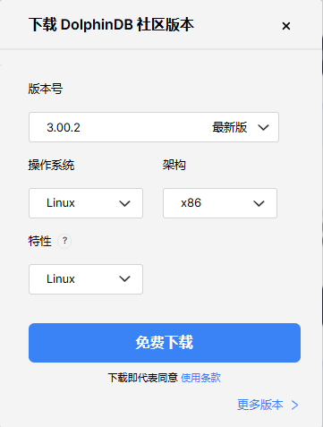下载后，解压 zip 包，并进入 server 目录：
unzip DolphinDB_Linux64_V3.00.1.2.zip -d <YOUR_PATH>
cd <YOUR_PATH>/serverserver 目录中，dolphindb 为 server 可执行文件，请确保该文件有执行权限。
chmod +x dolphindbdolphindb.cfg 为数据库配置文件，用户可以通过添加或修改配置项，对数据库的日志、内存、性能、网络等方面进行配置。启动前，请配置 localSite 中端口号为空闲端口（默认是 8848）。
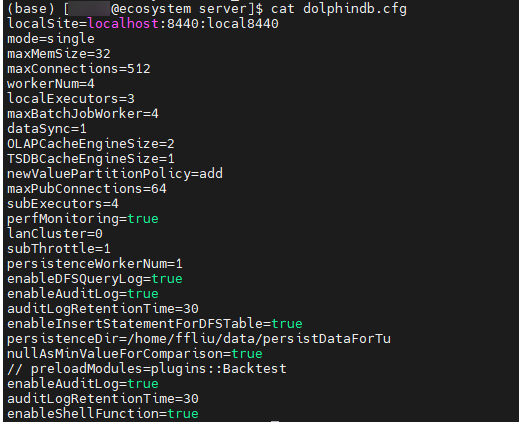参数配置示例：
- 例1：修改数据存储路径，需要在配置文件中添加 volumes
配置项（以配置多个磁盘为例）：
volumes=/hdd/hdd1/volumes, /hdd/hdd2/volumes
如果以单机集群方式进行部署，在 cluster.cfg 配置文件中配置 volumes 时，需要确保不同节点的存储路径不会重叠，一个简单的方式是使用宏变量
<ALIAS>，例如volumes=/hdd/hdd1/volumes/<ALIAS>,
/hdd/hdd2/volumes/<ALIAS>；或者可以通过“dnode1.volumes=/hdd/hdd1/volumes/dnode1”
的方式进行配置，其中 dnode1 是节点别名，在 cluster.nodes 文件中配置。
- 例2：需要开启流数据持久化功能，需要在配置文件中添加 persistenceDir
配置项：
persistenceDir=/home/DolphinDB/Data/Persistence
配置完毕后，启动 server：
- 前台启动
./dolphindb - 后台启动
sh startSingle.shHINT：windows 版本后台启动脚本为对应的 vbs 文件。
若 server 无法启动，请检查 dolphindb.log 日志中是否有异常信息，并参考文档 节点启动异常 进排查。
启动成功后，用户可以在 web 端输入 <ip:port>，如 localhost:8848 打开 Web 管理器。
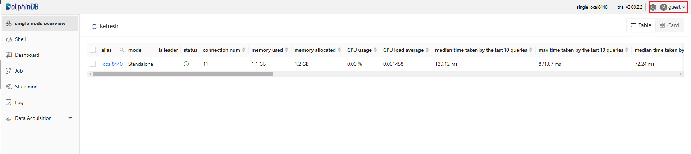部分系统运维函数和库表创建对用户的权限有一定要求。初始条件下，默认用户为 guest，社区用户可以点击右上角的用户头像，选择 Log in 选项，然后通过 admin 账号进行登录：
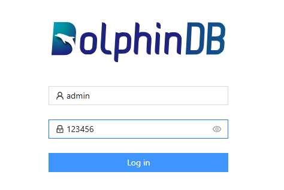登录后，点击左侧的 Shell 模块即可执行简单的代码进行测试。
如果要构建项目，用户可以通过 VSCode 或者 GUI 客户端连接 server 执行脚本。以 VSCode 为例，下载 DolphinDB 拓展后，点击左侧的数据库图标，在 setting.json 中必须修改配置参数 “url” 为 “ws://<连接节点 ip>:<连接节点 port>”，其余参数均为可选配置：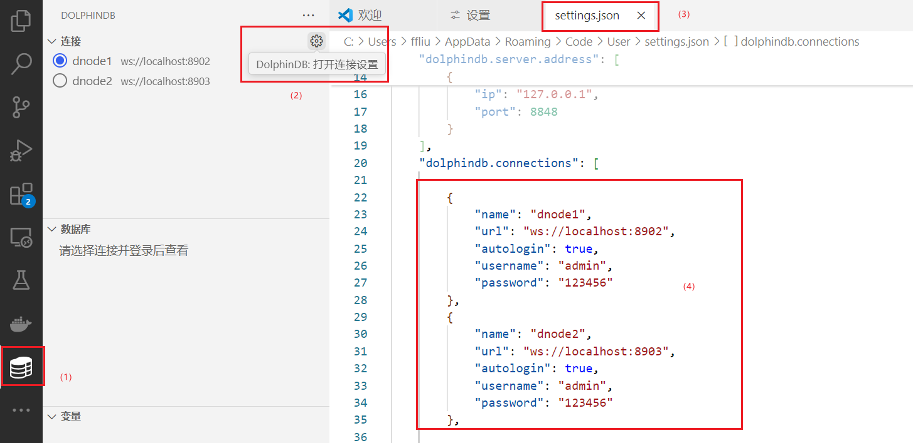
配置完成后，可以在任意用户的工作目录下，创建任意一个以 “.dos” 为尾缀的文件，编写 DolphinDB
脚本。脚本执行有两种方式：（1）点击右上角的执行按钮执行；（2）按快捷键 ctrl+E
执行。
数据说明
本教程提供的数据均为模拟数据，范围包含： Level2 的逐笔数据、Level2 快照数据。
本教程通过模块 MockData 模拟数据，用户下载附录的 MockData.dos 文件后，需将该文件置于 <homeDir>/modules/
路径目录下，其中 <homeDir> 默认是 server 主目录（由配置项 homeDir
指定），用户也可以在线调用getHomeDir()函数获取该路径。
模块安装后，在客户端中通过脚本 use MockData 导入该模块后，即可调用模块内部的函数产生模拟数据。
教程代码说明
- 在执行代码时，请确保代码中的变量 <YOUR_PATH> 已经替换成您自己的路径（建议使用绝对路径），如 “/home/usr/data”。请注意，如文档中无特殊说明，该路径必须是 DolphinDB server 所在物理机的路径而不是客户端的路径。
- 部分代码依赖上文创建的库表，测试脚本前请参考教程说明，预先建库建表。
2.3 如何快速上手
快速配置数据库
DolphinDB 数据库的内存、线程、网络、文件、流数据等等资源都可以通过离线的配置项文件或在线函数进行配置和修改。下面简述两种方式的具体操作：
（1）配置文件：下载 DolphinDB 后，打开安装包中的配置项文件，添加或者修改相关配置信息即可。配置文件路径如下：
表 2-1 不同部署场景下的配置项路径说明
| 部署 | 默认配置目录 | 相关配置项 |
|---|---|---|
| 单节点环境 | <安装目录>/server/dolphindb.cfg | config |
| 集群环境 |
<安装目录>/server/clusterDemo/config/
|
config nodesFile clusterConfig |
更多参数说明请参考 参数配置。注意：增加或修改配置后，重新启动 DolphinDB 服务，即可生效；用户通过在线调用
getConfig 函数获取配置项的值。
（2）在线函数：可以通过 setDynamicConfig 函数在线动态修改部分配置项的值，但注意在线动态修改的配置重启后会失效，若需要永久化需在配置文件进行修改。
快速开始编写 DolphinScript
DolphinDB 编程对以下用户天然友好：
- 有 SQL 编程经验的用户：DolphinDB SQL 语法基本兼容 SQL-92 标准。兼容性可参考 SQL 标准化
。
t1 = table(2024.01.01 + (0 31 60 91 121) as date, 1.2 7.8 4.6 5.1 9.5 as value) t2 = table(2024.02.01 + (0 15 90) as date, 1..3 as qty) SELECT * FROM t1 LEFT JOIN t2 ON t1.date = t2.date - 有 Python 编程经验的用户：DolphinDB 和 Python 一样都是动态类型语言，即声明变量无需指定变量类型。此外，DolphinDB
在函数定义、函数调用、传参方式上都与传统编程语言类似。
def f(a, mutable b, c=1){ if(a < b){ b*=c }else{ b*=-c } return b } f(6, 10)
对有编程经验的用户而言，上手写脚本并不会成为学习瓶颈，真正有难度的是如何编写出高性能且简洁的脚本。尤其在金融数据分析领域，对计算响应延时往往要求很高，高性能是用户关注的核心点。
为了提高脚本性能，用户需要牢牢把握两个核心的思维方式：向量式和函数式，这两个思维是编写出高效简洁脚本的关键。
- 向量式编程，简单来说就是允许程序员以数学向量（即一组数值）作为操作的基本单位，而不是单个的标量数值。在向量式编程中，操作和函数可以直接应用于整个数组或矩阵，而不需要使用显式的循环结构。
该编程方式主要得益于 DolphinDB 在指令集上的优化，例如二元运算时，将 1 对 1的两两元素运算拓展到 n 对 n 的并发计算；或对单个向量计算时，在算法上通过增量计算优化函数的性能。使用经过向量化优化的函数计算，其性能远远高于传统遍历的方式。
例. 比较循环遍历和向量化计算两个向量和的性能开销。n = 10000 a = rand(10.0, n) b = rand(10.0, n) c = array(DOUBLE, n) timer for(i in 0:n){ c[i]=a[i]+b[i] } // Time elapsed: 22.021 ms timer c=a+b // Time elapsed: 0.069 msDolphinDB 绝大部分函数均支持向量计算，内部通过向量化的方式优化了函数的性能，因此要运用好向量化的思维，就要灵活的掌握各种函数的应用。
- 函数式编程，一种以函数为中心的编程范式。函数式编程强调纯函数，即输入决定输出，不依赖外部状态且无副作用。由于没有副作用，多个线程和进程可以并发执行，同时代码方便调试且能够在不同环境进行复用；由于函数链式组合编写代码，代码也会更简洁、可读性也会更高。
例. 使用函数式编程的方式实现：计算两个内存表存在不同之处的所有行号。
t1 = table(`A`B`C as id, 1000 2000 1000 as qty, 50.5 60.5 100.0 as price) t2 = table(`A`B`C as id, 1000 2100 1000 as qty, 50.5 60.5 100.0 as price) byRow(all, byColumn(eq, t1, t2)).not().at() // 或使用高级函数模式符号替代 eq:V(t1, t2).all:H().not().at()利用好函数式编程，可以编写出更简洁的脚本。其编程的关键点在于高阶函数、链式调用、纯函数。
为了更好领悟上述的编程特点和编程思想，下文将通过一个完整连贯的案例，一步步带领大家搭建一个基础的 DolphinDB 项目。
2.4 阅读指引
针对不同从业方向人群，本教程推荐的阅读指引如下：
- 数据平台开发与运维人员：主要阅读第 3~5 章，这些章节介绍了建库建表、数据导入、数据清洗和预处理等方面的内容。
- 数据分析人员 ：主要阅读第 5~7 章，这些章节介绍了 SQL 编程（聚合、时序等）、流计算框架（流订阅、引擎级联计算等）等方面的内容。
- 每个章节都提供了常见问题的解决引导和下一步阅读的指南，供用户参考。
对于初学者，入门 DolphinDB 时，可以优先在金融场景案例中搜索是否有和自己场景类似的案例，进行阅读实操。在学习的过程如遇问题，建议优先在用户手册和 ask 社区搜索相关问题，如无法解决可以通过社区、邮件等途径寻求技术支持。
3. 创建数据库和数据表
为了满足海量数据存储和查询的需要，DolphinDB 将数据表按照分区划分成小粒度的数据块，分布式地存储在各个节点上；此外根据不同的应用场景，DolphinDB 开发设计了不同的存储引擎。因此，在建库建表时，比起传统的数据库，DolphinDB 需要额外设置更复杂的配置参数，例如分区方案、存储引擎等等。
为了循序渐进地进行理解和学习，本章将从分布式和分区设计开始讲解，然后以一个具体的建库建表案例进行分析，以帮助用户进行理解。
3.1 分布式架构与数据分区
分布式是 DolphinDB 实现海量数据存储、并行计算提速的关键架构。分布式架构对用户开放的“接口”叫做分布式表，在 DolphinDB 中指路径以 “dfs://” 开头的数据库下存储的表。
DolphinDB 的分布式是基于分布式文件系统实现的，是一个逻辑上的概念，而不是指物理上的多机存储。即使是单服务器单节点，也可以创建一个分布式表。分布式表的数据按 1 个或多个维度，在逻辑上分成很多个部分，每一个部分称之为分区。
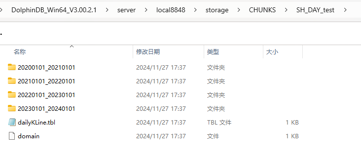为了保证数据的高可用性、可扩展性，提升系统的负载均衡，用户可以部署一个分布式集群。
在分布式集群中，控制节点负责集群的监控、元数据管理，多个控制节点（至少 3 个）可以构成一个 raft 组，以实现高可用集群部署。数据存储和计算的工作由集群中的数据节点和计算节点负责，控制节点不参与此类工作。数据节点和计算节点既可以部署在同一台物理机，也可以部署在不同的物理机，每台物理机通过一个代理节点对其上部署的数据节点和计算节点进行管理。
数据节点负责数据存储，同时也支持内存计算，在分布式集群中，分区可以按照设定包含固定数量的副本，分散地存储在数据节点上；计算节点只支持计算，不支持存储，它主要用于一些复杂且开销较大的计算任务。
以一个 3 个数据节点的集群为例，数据按天值分区同时按股票代码哈希分区，双副本存储。集群中的数据存储架构如下图所示（最小的蓝色方块表示分区的一个副本）：
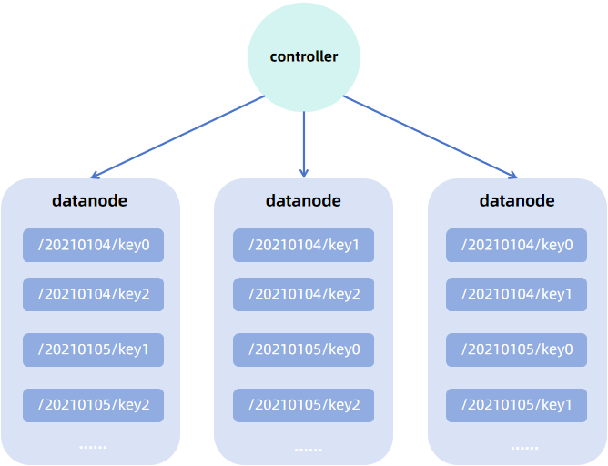分布式存储必然涉及到分布式的存储/查询/计算，因此 DolphinDB 数据库实现了事务对分布式的支持。DolphinDB 的分布式实现以 map-reduce 框架为核心。当用户发起分布式查询时，查询语句会下沉（map）到各个分区实现并行计算，最后汇总（merge）计算结果到查询发起节点，如有必要，还可以基于汇总结果做进一步计算（reduce）。
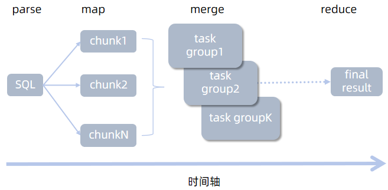3.2 设置合理分区
数据分区主要发挥以下作用：
- 缩小查询范围：如果查询条件包含分区列，则可以通过剪枝操作，快速过滤掉不必要的分区查询，避免全表扫描带来的开销。
- 提高计算性能：将数据分散存储在不同的节点上，系统可以并行处理计算请求，提高数据处理速度。
- 提高可靠性和容错能力：通过数据复制和冗余存储，分布式系统可以在某些节点失败时继续运行，不会丢失数据，从而提高系统的可靠性。节点故障时，也可以从分区副本中恢复数据。
- 增强可扩展性：分布式存储系统可以添加更多的节点来存储数据分区，从而实现水平扩展，以应对数据量的增长。
分区粒度（即每个分区包含的数据量大小）会对查询性能造成影响，这里总结为：
- 分区粒度过大：单分区数据量大，查询时 IO 开销高。受到 license 内存限制，可能导致内存溢出、内存磁盘频繁切换等问题。
- 分区粒度过小：单分区数据量小，查询涉及分区多，查询子任务数量大，将造成节点间通讯成本增加。此外，由于控制节点存储分区元数据，分区过多，控制节点元数据信息爆炸，可能导致控制节点内存不足。最后，由于涉及的分区多，导致系统读写频繁，从而造成很多低效的磁盘访问（小文件读写)，造成系统负荷过重。
用户建表时需要指定分区字段，系统将依据分区字段的值按照分区模式划分分区，分区模式由用户在建库时指定。下面结合图例对不同分区模式的机制进行说明，假设原始数据为：
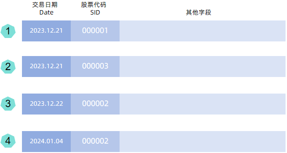- VALUE 分区：用户需要指定分区字段的部分值（以列表形式提供，如以日期分区，可以提供
2022.01.01..2022.01.31），数据依据分区字段值进行分区，一个值对应一个分区。
注意：官网下载的安装包中的配置项默认设置了 newValuePartitionPolicy=add，即支持写入不在值分区内的数据时，值分区也可以自动拓展。因此，用户在配置 VALUE 分区的模式时，可以只指定少量字段值，以避免元数据过多（例如用户设置了 2000.01.01..2030.01.01，会造成分区元数据很大）。
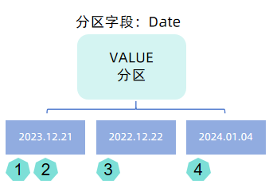 - HASH 分区：用户指定固定的 HASH 分区数，数据依据分区字段值调用哈希函数 hashBucket 映射后的结果进行分区，每个哈希值对应一个分区。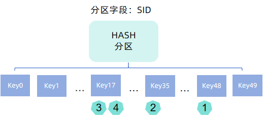
- RANGE 分区：用户指定分区范围，数据依据分区字段值划分到对应的范围中，一个范围对应一个分区。范围分区不支持自动拓展，用户需要手动调用函数 addRangePartitions。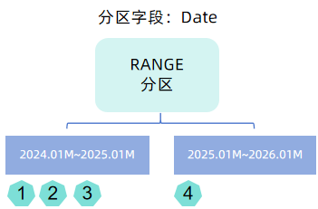
- LIST 分区：用户指定以列表形式指定哪些值属于哪些。实践中，金融场景客户很少使用这种分区方式。
- COMPO 分区：将多个字段的不同的分区方案进行组合。
金融领域通常将时间字段作为分区字段，指定分区模式时，最常用的是 VALUE 和 RANGE 分区，如日 K 线数据按照年划分 RANGE 分区，分钟 K 线按照日划分 VALUE 分区等。但是部分场景下，仅依靠一层分区，仍无法控制分区在合理的范围，此时可以通过 COMPO 组合分区进行更细粒度的划分，例如逐笔数据按照日划分 VALUE 分区，同时按照股票代码 HASH 分区。 HASH 分区是灵活调整分区粒度的一个重要的方式。
调整分区粒度的方法：
- 降低分区粒度：（1）采用 COMPO 分区；（2）增加分区个数；（3）将 RANGE 分区改为 VALUE 分区。
- 增加分区粒度：（1）采用 RANGE 分区取代 VALUE 分区；（2）HASH 分区减小哈希映射数。
合理的分区大小推荐：
- OLAP 引擎：100MB - 300MB （压缩前）
- TSDB/PKEY 引擎：400MB - 1GB（压缩前）
选择合适的存储引擎：
分布式数据可选的存储引擎有 TSDB, OLAP 和 PKEY，其中 TSDB 和 OLAP 是较为基础的两个存储引擎。TSDB 引擎相较于 OLAP 引擎而言，底层设计更加复杂，详情可参考 TSDB 存储引擎简介 。从用户层面来说，最显著的功能特点就是 TSDB 除了分区机制外，还额外增加一层字段索引机制，因而更适用于大数据点查的场景。对于较小的数据量可以继续用 OLAP 存储甚至存储为无分区的维度表。如果对数据有主键约束的需求可以使用 PKEY 引擎进行存储。
常见的金融数据分区方案参见：存储金融数据的分区方案最佳实践。此处摘选了一部分股票的分区方案供参考：
表 3-1 不同种类股票数据的分区方案示例
| 产品大类 | 数据集 | 存储引擎 | 分区方案 | 分区列 | 排序列 |
|---|---|---|---|---|---|
| 股票 | Level2 快照（沪深分表） | TSDB |
按天 VALUE 分区 + 按股票代码 HASH25 分区
|
交易日期 + 股票代码 | 股票代码 + 交易时间 |
| 股票 | Level1 快照（沪深分表） | TSDB | 按天 VALUE 分区 + 按股票代码 HASH25 分区 | 交易日期 + 股票代码 | 股票代码 + 交易时间 |
| 股票 | 逐笔委托（沪深分表） | TSDB | 按天 VALUE 分区 + 按股票代码 HASH25 分区 | 交易日期 + 股票代码 | 股票代码 + 交易时间 |
| 股票 | Level1 快照（沪深合并） | TSDB | 按天 VALUE 分区 + 按股票代码 HASH50 分区 | 交易日期 + 股票代码 | 交易所类型 + 股票代码 + 交易时间 |
| 股票 | 逐笔委托（沪深合并） | TSDB | 按天 VALUE 分区 + 按股票代码 HASH50 分区 | 交易日期 + 股票代码 | 交易所类型 + 股票代码 + 交易时间 |
| 股票 | 逐笔成交（沪深合并） | TSDB | 按天 VALUE 分区 + 按股票代码 HASH50 分区 | 交易日期 + 股票代码 | 交易所类型 + 股票代码 + 交易时间 |
| 股票 | 日 K 线 | OLAP | 按年 RANGE 分区 | 交易时间 | 无 |
| 股票 | 分钟 K 线 | OLAP | 按天 VALUE 分区 | 交易时间 | 无 |
- 分区方案在 DolphinDB
创建数据库时指定，指定后，该数据库下的表将以该方案划分数据。以一个具体的建库代码为例，
create database "dfs://stock_lv2_snapshot" partitioned by VALUE(2024.01.01..2024.01.02), HASH([SYMBOL, 50]), engine='TSDB'，其中partition by用于指定分区方案，即VALUE(2024.01.01..2024.01.02), HASH([SYMBOL, 50])，该方案表示的含义如下：- 按天 VALUE 分区：属于同一天的数据都存储在同一个分区
- 按 SYMBOL 类型的字段（如股票代码）HASH 50 分区：对分区字段调用哈希函数 hashbucket，buckets 参数为 50，将数据映射到 0~49 中的一个键，属于同一个键的数据都存储在同一个分区。
engine用于指定存储引擎，本例中为 TSDB。
- 排序列是 TSDB 引擎特有的一个参数（sortColumns），用于设置 TSDB 引擎的索引机制，OLAP 引擎无需指定排序列。
- DolphinDB 的事件类型精度最粗到月，例如 2021.01M，因此对于按年分区，无法通过值分区实现，必须使用 RANGE
分区，参考代码：
dataRange = 2020.01M + (0..10)*12 create database "dfs://year" partitioned by RANGE(dataRange)
3.3 建库建表
DolphinDB 可以通过函数建库建表，也可以使用 SQL 进行建库建表，本教程以 SQL 编程进行示例，相关参考文档 create。
3.3.1 快速创建一个数据库
以股票 Level2 快照（沪深合并）数据为例，创建一个数据库，参考金融数据分区方案最佳实践教程，分区方案如下：
表 3-2 沪深股票 Level2 快照数据分区方案
| 产品大类 | 数据集 | 存储引擎'engine' | 分区方案partitionType+partitionScheme |
|---|---|---|---|
| 股票 | Level2 快照（沪深合并） | TSDB | 按天分区 + 按股票代码 HASH50 分区 |
// 环境清理：如果重复试验可执行此步，请确保自身环境内不存在同名数据库，否则会被删除
drop database if exists "dfs://stock_lv2_snapshot"
// 创建一个路径为 "dfs://stock_lv2_snapshot" 的数据库，按照日期值 + SYMBOL 哈希组合分区，存储引擎为 TSDB
create database "dfs://stock_lv2_snapshot" partitioned by VALUE(2024.01.03..2024.01.04), HASH([SYMBOL, 50]), engine='TSDB'3.3.2 分区方案确立规则（可跳过）
为了能够在更通用的场景确立分区方案，下面以模拟的快照数据为例进行演示。
STEP1. 数据量估算
use MockData
t = stockSnapshot(tradeDate=2020.01.06, securityNumber=1)
exec count(*) from t
// output: 4802为了估算整体的数据量大小，可以先估算单行数据的大小。下面给出两种单行数据量的估算方法。
方法一：根据表字段的存储的字节数估算。
// 调用 schema 函数获取表字段信息（字段名，类型）
s = schema(t).colDefs
/* output：
name typeString typeInt extra comment
------------------ ---------- ------- ----- -------
TradeDate DATE 6
TradeTime TIME 8
MDStreamID SYMBOL 17
Securityid SYMBOL 17
SecurityIDSource SYMBOL 17
TradingPhaseCode SYMBOL 17
ImageStatus INT 4
PreCloPrice DOUBLE 16
......
*/下表在 schema 字段信息的基础上补充了字段含义说明和字节数的信息，字节数是对照表 数据类型 获取的，对于数组向量，这里的估算方式为：单行数据大小 = Σ字段类型对应字节数。
| 字段含义 | 入库字段名 | 入库数据类型 | 字节数 | |
|---|---|---|---|---|
| 1 | 数据生成日期 | TradeDate | DATE | 4 |
| 2 | 数据生成时间 | TradeTime | TIME | 8 |
| 3 | 行情类别 | MDStreamID | SYMBOL | 4 |
| 4 | 证券代码 | SecurityID | SYMBOL | 4 |
| 5 | 证券代码源 | SecurityIDSource | SYMBOL | 4 |
| 6 | 交易阶段 | TradingPhaseCode | SYMBOL | 4 |
| 7 | 快照类型(全量/更新) | ImageStatus | INT | 4 |
| 8 | 昨日收盘价 | PreCloPrice | DOUBLE | 8 |
| 9 | 成交笔数 | NumTrades | LONG | 8 |
| 10 | 成交总量 | TotalVolumeTrade | LONG | 8 |
| 11 | 成交总金额 | TotalValueTrade | DOUBLE | 8 |
| 12 | 最近价 | LastPrice | DOUBLE | 8 |
| 13 | 开盘价 | OpenPrice | DOUBLE | 8 |
| 14 | 最高价 | HighPrice | DOUBLE | 8 |
| 15 | 最低价 | LowPrice | DOUBLE | 8 |
| 16 | 今收盘价 | ClosePrice | DOUBLE | 8 |
| 17 | 升跌1（最新价-昨收价） | DifPrice1 | DOUBLE | 8 |
| 18 | 升跌2（最新价-上一最新价） | DifPrice2 | DOUBLE | 8 |
| 19 | 股票市盈率1 | PE1 | DOUBLE | 8 |
| 20 | 股票市盈率2 | PE2 | DOUBLE | 8 |
| 21 | 基金T-1净值 | PreCloseIOPV | DOUBLE | 8 |
| 22 | 基金实时参考净值 | IOPV | DOUBLE | 8 |
| 23 | 委托买入总量 | TotalBidQty | LONG | 8 |
| 24 | 加权平均买入价格 | WeightedAvgBidPx | DOUBLE | 8 |
| 25 | 债券加权平均委买价格 | AltWAvgBidPri | DOUBLE | 8 |
| 26 | 委托卖出总量 | TotalOfferQty | LONG | 8 |
| 27 | 加权平均卖出价格 | WeightedAvgOfferPx | DOUBLE | 8 |
| 28 | 债券加权平均委卖价格 | AltWAvgAskPri | DOUBLE | 8 |
| 29 | 涨停价 | UpLimitPx | DOUBLE | 8 |
| 30 | 跌停价 | DownLimitPx | DOUBLE | 8 |
| 31 | 持仓量 | OpenInt | INT | 4 |
| 32 | 权证溢价率 | OptPremiumRatio | DOUBLE | 8 |
| 33 | 卖价10档 | OfferPrice | DOUBLE[] | 80 |
| 34 | 买价10档 | BidPrice | DOUBLE[] | 80 |
| 35 | 卖量10档 | OfferOrderQty | LONG[] | 80 |
| 36 | 买量10档 | BidOrderQty | LONG[] | 80 |
| 37 | 申买10档委托笔数 | BidNumOrders | INT[] | 40 |
| 38 | 申卖10档委托笔数 | OfferNumOrders | INT[] | 40 |
| 39 | ETF申购笔数 | ETFBuyNumber | INT | 4 |
| 40 | ETF申购数量 | ETFBuyAmount | LONG | 8 |
| 41 | ETF申购金额 | ETFBuyMoney | DOUBLE | 8 |
| 42 | ETF赎回笔数 | ETFSellNumber | INT | 4 |
| 43 | ETF赎回数量 | ETFSellAmount | LONG | 8 |
| 44 | ETF赎回金额 | ETFSellMoney | DOUBLE | 8 |
| 45 | 债券到期收益率 | YieldToMatu | DOUBLE | 8 |
| 46 | 权证执行的总数量 | TotWarExNum | DOUBLE | 8 |
| 47 | 买入撤单笔数 | WithdrawBuyNumber | INT | 4 |
| 48 | 买入撤单数量 | WithdrawBuyAmount | LONG | 8 |
| 49 | 买入撤单金额 | WithdrawBuyMoney | DOUBLE | 8 |
| 50 | 卖出撤单笔数 | WithdrawSellNumber | INT | 4 |
| 51 | 卖出撤单数量 | WithdrawSellAmount | LONG | 8 |
| 52 | 卖出撤单金额 | WithdrawSellMoney | DOUBLE | 8 |
| 53 | 买入总笔数 | TotalBidNumber | INT | 4 |
| 54 | 卖出总笔数 | TotalOfferNumber | INT | 4 |
| 55 | 买入委托成交最大等待时间 | MaxBidDur | INT | 4 |
| 56 | 卖出委托最大等待时间 | MaxSellDur | INT | 4 |
| 57 | 买方委托价位数 | BidNum | INT | 4 |
| 58 | 卖方委托价位数 | SellNum | INT | 4 |
| 59 | 入库时间 | LocalTime | TIME | 4 |
| 60 | 消息序列号 | SeqNo | INT | 4 |
| 61 | 委托卖量50档 | OfferOrders | LONG[] | 400 |
| 62 | 委托买量50档 | BidOrders | LONG[] | 400 |
rowSize = 19 * 4 + 35 * 8 + 2 * 40 + 4 * 80 + 2 * 400
rowSize
// output: 1,556(B)
oneDayPerStock = 4802 * 1556 \ 1024 \ 1024
oneDayPerStock
// output: 7.12(MB)方法二：直接导入部分数据估算单行数据的字节数，并估算单日单只股票的数据量。
// 这里直接取模拟的第一行数据为例
rowSize = t[0].values().memSize()
// output: 1,728(B)
oneDayPerStock = 4802 * 1728 \ 1024 \ 1024
oneDayPerStock
// output: 7.9(MB)STEP2. 分区方案制定
根据实践经验，TSDB 存储引擎较合理的分区粒度是 400MB~1GB，根据上面的估算，单日数据量约为 7~8MB。以 8 MB
为基准，如果按月分区则单分区数据量约为 240MB，粒度略小。若设置为 2
个月一个分区，数据量满足需求，但是必须设置分区类型为范围分区（RANGE），而 RANGE
分区不支持自动拓展，随着数据量增长，可能会造成范围外的数据无法写入，用户需要手动调用函数
addRangePartitions
进行分区拓展。因此，对于时间类型，推荐使用可自动拓展分区的值分区（VALUE）作为分区类型。
那么为了满足需求，这里可以提出两种分区方案：
- 方案一. 按日 VALUE 分区 + 按股票字段 HASH 分区：如果设置 HASH 桶数为 50，5000 支股票哈希后每个桶约为 100 支，则单分区数据量约为 800 MB，满足需求。
- 方案二. 按月 VALUE 分区 + 按股票字段 HASH 分区：单月单只股票的数据量是 240MB， 因此需要确保每个桶的股票数为 3 或者 4 才能满足需求，则 HASH 桶数为 1250 ~ 1666，满足需求。
STEP3. 分区方案评估
分析方案二，局限性如下：（1）HASH 桶数过多，每个桶只对应了 3~4 只股票；（2）快照查询的场景下，按日检索是一个高频的查询方式。在此场景下，按月分区的性能没有按日分区高。（3）一般场景下不会按照 HASH 值进行查询，HASH 分区更多是用在降低分区粒度的场景。
综上选取方案一，是一个较好的选择，即按天分区 + 按股票代码 HASH 50 分区。
3.3.3 快速创建一个数据表
create table dbPath.tableName (
schema[columnDescription]
// 字段名 字段类型 [comment = 字段注解, compress = 压缩方案, index = 向量索引]
)
[partitioned by partitionColumns], // 分区列
[sortColumns], // 排序列
[keepDuplicates=ALL], // 去重机制
[sortKeyMappingFunction] // 排序列映射函数
[softDelete=false] // 软删除配置
[comment] // 表注释配置参数的用法详见 createPartitionedTable 参数说明。
根据金融数据最佳实践方案，创建数据库 "dfs://stock_lv2_snapshot" 下的分布式表 "snapshot"，设置分区列为 TradeDate（对应按日 VALUE 分区）和 SecurityID（对应 SYMBOL HASH 分区）。后续数据写入时，将依据这分区字段的值，将数据划分存储到不同的分区中。
表 3-3 沪深股票 Level2 快照数据分区方案
| 产品大类 | 数据集 | 分区列partitionColumns | 排序列sortColumns |
|---|---|---|---|
| 股票 | Level2 快照（沪深合并） | 交易日期 + 股票代码 | 交易所类型 + 股票代码 + 交易时间 |
create table "dfs://stock_lv2_snapshot"."snapshot"(
//comment添加字段注释，compress指定压缩方法
TradeDate DATE[comment="交易日期", compress="delta"]
TradeTime TIME[comment="交易时间", compress="delta"]
MDStreamID SYMBOL
SecurityID SYMBOL
SecurityIDSource SYMBOL
TradingPhaseCode SYMBOL
ImageStatus INT
PreCloPrice DOUBLE
NumTrades LONG
TotalVolumeTrade LONG
TotalValueTrade DOUBLE
LastPrice DOUBLE
OpenPrice DOUBLE
HighPrice DOUBLE
LowPrice DOUBLE
ClosePrice DOUBLE
DifPrice1 DOUBLE
DifPrice2 DOUBLE
PE1 DOUBLE
PE2 DOUBLE
PreCloseIOPV DOUBLE
IOPV DOUBLE
TotalBidQty LONG
WeightedAvgBidPx DOUBLE
AltWAvgBidPri DOUBLE
TotalOfferQty LONG
WeightedAvgOfferPx DOUBLE
AltWAvgAskPri DOUBLE
UpLimitPx DOUBLE
DownLimitPx DOUBLE
OpenInt INT
OptPremiumRatio DOUBLE
OfferPrice DOUBLE[]
BidPrice DOUBLE[]
OfferOrderQty LONG[]
BidOrderQty LONG[]
BidNumOrders INT[]
OfferNumOrders INT[]
ETFBuyNumber INT
ETFBuyAmount LONG
ETFBuyMoney DOUBLE
ETFSellNumber INT
ETFSellAmount LONG
ETFSellMoney DOUBLE
YieldToMatu DOUBLE
TotWarExNum DOUBLE
WithdrawBuyNumber INT
WithdrawBuyAmount LONG
WithdrawBuyMoney DOUBLE
WithdrawSellNumber INT
WithdrawSellAmount LONG
WithdrawSellMoney DOUBLE
TotalBidNumber INT
TotalOfferNumber INT
MaxBidDur INT
MaxSellDur INT
BidNum INT
SellNum INT
LocalTime TIME
SeqNo INT
OfferOrders LONG[]
BidOrders LONG[]
)
partitioned by TradeDate, SecurityID,
sortColumns=["SecurityID","TradeTime"],
keepDuplicates=ALL脚本说明：
与传统关系型数据库不同，DolphinDB create table 语句支持对分布式存储和分区的支持，对于分布式表，表名处指定的是 dbPath.tbName 即 “数据库名.数据表名”。此外，用户需要在字段声明后添加一部分分布式表的配置，如分区配置 partitioned by 等（部分配置只适用于对应的存储引擎，如 sortColumns 和 keepDuplicates 是 TSDB 引擎专属的配置）。
在字段类型声明中，INT[], LONG[], DOUBLE[] 是 DolphinDB 特有的 ARRAY 类型，用于声明数组向量字段，数组向量是一种特殊的向量，用于存储可变长度的二维数组，详情参考 数组向量（array vector） 。
思考题：
（1）模拟写入几天的数据，写入后，尝试重新查询出表中的数据，观察数据的查询顺序，思考下述两个问题：
- 查询顺序和写入顺序是否一致？它和分区之间的关系是怎么样的？
- 查询顺序是否按照 sortColumns 排序？若不是，则思考 sortColumns
起到怎么样的作用？
re1 = select top 10000 * from loadTable("dfs://stock_lv2_snapshot", "snapshot") re2 = select top 10000 * from loadTable("dfs://stock_lv2_snapshot", "snapshot") order by SecurityID, TradeTime eqObj(re1.values(), re2.values())
// 定义按天写入的函数
def writeDataByDate(date, dbName, tbName, stockNum): tableInsert(loadTable(dbName, tbName), stockSnapshot(tradeDate=date, securityNumber=stockNum))
// 写入几个交易日的数据，此处使用交易日历函数获取 5 天交易日
dates = getMarketCalendar('XSHE', 2022.01.01, 2022.01.10)
// [2022.01.04,2022.01.05,2022.01.06,2022.01.07,2022.01.10]
// each 函数循环在提交后台写入任务，一天一个 job，每个 job 返回写入的数据量
each(date -> submitJob("writeData2snapshot", "write by date", writeDataByDate{, "dfs://stock_lv2_snapshot", "snapshot", 100}, date), dates)
// 查看 job 的状态，获取所有 job 的返回结果
getRecentJobs(5)
each(getJobReturn, getRecentJobs(5).jobId)
// [480200,480200,480200,480200,480200]
// 查询表的总数据量，exec 查询返回一个标量
exec count(*) from loadTable("dfs://stock_lv2_snapshot", "snapshot")
// 2401000（2）以上表字段 bidPrice 和 offerPrice ，存储的是 10 档的价格。将其存储为一列 DOUBLE[] 类型字段和拆分成 10 列 DOUBLE 字段存储，两者的区别是什么，数组向量存储有什么优越性？
3.4 常见问题
分区
-
创建数据库时如何按年进行分区？
DolphinDB 不支持年这一数据类型，因此无法按年进行值分区。按年分区需使用 RANGE 分区进行，可参考下述脚本：
create database "dfs://yearDB" partitioned by RANGE(date(2010.01M+12*1..10)), engine='TSDB' -
建库建表完成后，是否支持修改分区方案？
由于数据存储是依赖于分区的，因此不支持直接修改分区方案。最佳做法是重新创建一个新分区方案的库表，然后将数据迁移过去，最后删除原来的库表。
可以借助mr + repartitionDS函数进行数据迁移（以本教程的快照数据为例）：// 创建一个新的分区方案的数据库表 drop database if exists "dfs://stock_lv2_snapshot_1" create database "dfs://stock_lv2_snapshot_1" partitioned by VALUE(2022.01M..2022.12M), HASH([SYMBOL, 10]), engine='TSDB' // 省略部分表字段代码 create table "dfs://stock_lv2_snapshot_1"."snapshot"( TradeDate DATE[comment="交易日期", compress="delta"] TradeTime TIME[comment="交易时间", compress="delta"] ... ) partitioned by TradeDate, SecurityID, sortColumns=[`SecurityID,`TradeTime], keepDuplicates=ALL // 由于 repartitionDS 只能按照一个字段重新分区，这里选用了不会造成新库表写入分区冲突的 TradeDate 字段 snapshot = loadTable("dfs://stock_lv2_snapshot", "snapshot") ds = repartitionDS(<select * from snapshot>,`TradeDate, VALUE, 2022.01M..2022.12M); // 定义 map 函数用于写入新的库表 def writeDS(dst_dbPath, dst_tbName, data){ dstTb=loadTable(dst_dbPath, dst_tbName) dstTb.append!(data) flushTSDBCache() } // mr 迁移数据，如果内存不够大： 1. 串行迁移，即 parallel = false 2. ds 数据源拆分成更小的单元，如按日拆分 mr(ds, writeDS{"dfs://stock_lv2_snapshot_1", "snapshot"}, parallel=false) // 删除旧的库表 drop database if exists "dfs://stock_lv2_snapshot"社区版默认配置执行上述代码时，可能会报错：The size of the write table cannot exceed the size of cacheEngine. 或者 Out of Memory. 推荐根据注释方案调整写入粒度，参考脚本如下：
ds = repartitionDS(<select * from snapshot>,`TradeDate, VALUE, 2022.01.01..2022.12.31); mr(ds, writeDS{"dfs://stock_lv2_snapshot_1", "snapshot"}, parallel=false)
数据库&数据表
-
表字段命名的规范是什么？能否以数字开头？
创建表时，列名必须由中文或英文字母、数字或下划线 (_)组成，且必须以中文或英文字母开头。
有以下几种场景可能出现特殊列名，即不满足上述需求的列名：
as函数取别名：table(1 2 3 as "_aa")addColumn添加列：t.addColumn("_bb", INT)- pivot by
行列转换：
t = table(2022.01.01 + 1..5 as date, `a`a`c`c`b as sym, 1..5 as val) select last(val) from t pivot by sym, date /* output: sym 2022.01.02 2022.01.03 2022.01.04 2022.01.05 2022.01.06 --- ---------- ---------- ---------- ---------- ---------- a 1 2 b 5 c 3 4 */
-
是否支持修改数据库名、数据表名、字段名?
不支持修改数据库名，但是可以通过函数
renameTable和rename!修改表名和字段名，但需要注意 TSDB 引擎存储的分布式表不支持对字段进行改名、修改值和删除的操作。 建库时 "dfs://" 路径是什么含义？此类库中的表存储在什么路径下?
"dfs://" 用于声明数据库的类型是分布式数据库，除此以外，还有 "oltp://" 用于声明在线事务处理数据库。所有 "dfs://" 开头的数据库中的数据都存储在 volumes 参数配置的路径下，可通过 getConfig("volumes") 查看。
单节点模式下，volumes 的默认目录是 <HomeDir>/storage。集群模式下，默认目录是<HomeDir>/<nodeAlias>/storage。
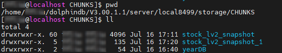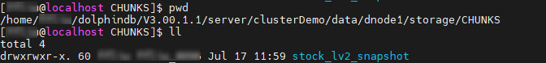-
存储时，推荐选择宽表还是窄表？各自的适用的场景是什么？
-
宽表：截面计算便捷，数据写入速度上优于窄表；增删改基于字段操作，开销较大。
-
窄表：增删改基于记录操作，比较便捷开销较小；截面计算不便，需要通过 pivot 转换为宽表。
以中高频因子存储为例，由于增删因子操作较为频番，综合性能考虑窄表优于宽表，具体可参考 中高频多因子库存储最佳实践 中的分析步骤去评估是存储为宽表还是窄表。
-
-
存储时，推荐选择分布式表还是维度表？各自的适用的场景是什么？
首先要理解维度表的概念，维度表实质上是一个持久化且不进行分区的表。前文提到分区的主要目的是将海量数据划分为小块，方便快速定位查找，因此如果数据量较小且需要持久化，则推荐存储为维度表，否则存储为分布式表。
-
表中是否可以存储字典、多维数据等对象？
不支持存储字典，如果是类似 json 数据，可以通过 BLOB 超长字符串的格式存储在表中；表中只能存储数组向量、列式元组（仅内存表）等类型强一致的二维对象，不支持超过二维或者类型不一致的二维数组存储。
-
是否支持多线程并发写入数据表，目前报错：filepath xxx has been owned by transaction.
DolphinDB 默认不允许对同一分区进行并发写入，否则会造成分区冲突，报上述错误。有一个方案是创建数据库时配置 atomic='CHUNK'，设置后，系统允许用户多线程并发写入同一个分区，但由于不能完全保证事务的原子性，可能出现部分分区写入成功而部分分区写入失败的情况。同时由于采用了重试机制，写入速度可能较慢。
事务
-
删除数据库是事务操作吗？是否支持回滚？
是的，如果删除数据库（
dropDatabase）或者删除分区（dropParition）失败，系统会自动回滚事务。 -
删除数据时产生下述报错，如何解决：
- 报错：deleteSubChunks failed, path "/xxx" does not exist.
- 报错：deleteSubChunks failed on '/dbName, chunk xxxx is not in COMPLETE state'
该报错是在数据节点上删除数据时，找不到对应的 chunk 分区信息时产生的。
下面给出一些此类问题的排查思路：
- 首先在控制节点调用函数
getClusterChunksStatus函数查看对应数据库下的分区状态信息，如果报错给出了 chunk 信息，则重点查看该 chunk 的状态。需要重点关注并记录的信息有 version（chunk 版本），state（chunk 状态） 和 replicaCount（副本数）。 - 然后在数据节点调用
pnodeRun(getAllChunks{"/dbName%"})统计一下所有 chunk 的副本数是否有缺失，然后针对报错的 chunk 记录一下 version 和 state 信息。 - 比较控制节点和数据节点 version 是否一致；检查副本数是否与控制节点记录的元数据一致；确认 chunk 状态是否都为完成状态（COMPLETE）。
若排查得到分区不一致，推荐将上述信息截图后提交给官方进行排查，有运维经验的用户可以参照教程 分区状态不一致 中的方法尝试解决。
- 报错：<ChunkInRecovery>deleteSubChunks failed on '/xxx', chunk xxx
is in RECOVERING
state.若等待分区恢复耗时过久，则可以通过下述脚本强制删除处在恢复状态的分区：
use ops dropRecoveringPartitions(dbPath="dfs://xxx", tableName="zzz") // tableName 为可选参数，可不指定
3.5 下一步阅读
4. 数据导入与数据清洗
创建好库表后，下一步就需要进行数据导入或数据迁移，在此过程中可能会遇到以下问题：
- 数据无法正确导入：源数据无法直接解析成 DolphinDB 的数据类型，造成数据错误、数据空值等；中文数据由于字符编码导致导入后的数据呈现乱码
- 导入数据预处理：需要增加、修改、重排序字段；需要将多列数据存储成数组向量入库；导入时需要跳过表头、跳过指定行数
- 数据膨胀：导入后的数据量较源文件大小膨胀了很多
- 内存溢出：社区版本受到内存限制，导入时可能会出现 Out Of Memory 内存溢出的现象
- 并行导入分区冲突：多线程并发写数据时，可能会抛出异常 The openChunks operation failed because the chunk <xxx> is currently locked and in use by transaction <tid>. RefId:S00002
本教程将针对数据导入中的一系列问题，结合实际案例进行系统地讲解。
4.1 方法导览
DolphinDB 支持多种文件格式导入、从数据库迁移、实时数据订阅等多种数据导入方式。
下表整理列出了数据导入 DolphinDB 数据库的不同方式、对应方法以及相关参考文档的链接：数据迁移方法。
表 4-1 DolphinDB 中的数据导入方法
|
导入方式 |
方法 |
相关链接 |
|---|---|---|
| 从文本文件导入（.txt, .csv 文件） |
内置文本文件加载函数：
|
|
| 从 HDF5 文件导入 |
安装并加载 HDF5 插件： 导入函数：
|
HDF5 |
| 从 Parquet 文件导入 |
安装&加载 Parquet 插件： 导入函数：
|
Parquet |
| 从二进制文件导入 |
内置二进制文件加载函数：
|
|
| 从 MySQL 迁移或同步 |
加载 MySQL 插件：（系统默认安装） 导入函数：
|
|
| 从 Oracle 迁移或同步 |
通过 DataX 插件 DolphinDBWriter： 插件安装 & 部署：
导入前需要配置 DataX 的 JSON 文件，主要包括 reader、writer 和 setting 三个部分。导入任务启动： |
|
| 从消息队列导入 |
通过 Kafka、Plusar、ActiveMQ、ZeroMQ 等消息中间件的插件。 以 Kafka 为例，加载 Kafka 插件： 加载后，可以先创建消费者并订阅对应主题的数据，然后创建消费线程将订阅的数据存入 DolphinDB 的流表，最后订阅流表数据入库。 |
Kafka |
| 从其他行情源导入 |
以 WindTDF 为例： |
彭博等更多行情插件也在开发中，用户也可以自行开发插件，参考 插件开发教程，用户开发插件后可以提交给 DolphinDB 官方插件市场，优质的插件有机会在官方进行分享与售卖。 |
4.2 从文本文件导入数据
本教程作为入门教程，将以最基础的文本文件导入数据作为示例，介绍导入的详细过程，以及导入中可能碰到的问题。
本章节使用的历史数据通过模拟产生，数据类型为快照数据，存储方式为 csv 文件。注意，导入的 csv 文件需要和 DolphinDB server 位于同一台服务器，且启动 DolphinDB server 的用户需要有该文件的读权限。
4.2.1 导入一年快照数据（每天一个文件）
场景：一年份的股票快照数据，每天一个 csv 文件，包含 100 只股票。
模拟数据生成 csv 文件，脚本如下：
dates = getMarketCalendar('XSHE', 2022.01.01, 2023.01.01)
def mockDataByDay(path, date){
submitJob("mockCsv", "mock data by date", saveText, stockSnapshot(tradeDate=date, securityNumber=100), path + string(date) + ".csv")
}
path = "<YOUR_PATH>/snapData/"
each(mockDataByDay{path}, dates)
getRecentJobs(242)可以观察到单个文件约为 300M，经验上，对于几百 MB 的文件数据作为一批写入较为合适。在此基础上，许多用户为了提高数据导入的性能，通常会尝试多线程进行数据写入。
submitJob
对每个文件的写入都创建一个后台作业，提交的批处理作业的并行度受到配置项 workerNum 影响，默认发行版配置的是
4。submitJob
函数默认的任务并行度是 2，如果要提高该并行度，可以使用 submitJobEx 函数提交任务，并对其参数
parallelism
进行配置。// 导入历史数据
dataPath = "<YOUR_PATH>/snapData/"
file_list = files(dataPath).filename
dbName = "dfs://stock_lv2_snapshot"
tbName = "snapshot"
// 定义单日写入任务
def loadDataByDay(dbName, tbName, schema, fileName){
loadTextEx(dbHandle=database(dbName), tableName=tbName, partitionColumns=["TradeDate", "SecurityID"], filename=fileName, schema=schema, sortColumns=[`SecurityID,`TradeTime])
}
// 创建任务写入作业
def createDataLoadJob(dbName, tbName, schema, fileName){
submitJob("loadDataByFile", "load data to db", loadDataByDay, dbName, tbName, schema, fileName)
}
// 设置导入的表的结构
schema = select name, typeString as type from loadTable("dfs://stock_lv2_snapshot", "snapshot").schema().colDefs
// 按照文件循环提交导入任务
each(createDataLoadJob{dbName, tbName, schema}, dataPath + file_list)通过
getRecentJobs函数查看最近写入任务的状态，确保所有写入任务全部执行完成。
// 一年的模拟数据包含 242 日交易日，每日一个文件
// 此处可以替换为 file_list.size()
getRecentJobs(242)getRencentJob 函数返回的结果是一张表，因此可以通过 SQL
对其进行信息的过滤和筛选。例如，过滤提交作业中未完成的作业总数：exec count(*) from getRecentJobs(242) where endTime is nullselect count(*) from loadTable("dfs://stock_lv2_snapshot", "snapshot")
// output: 116,208,4004.2.2 导入一天快照数据（每个股票一个文件）
场景：一天的股票快照数据，每个股票一个 csv 文件，共计 500 只股票。
模拟数据生成 csv 文件，脚本如下：
use MockData
t = stockSnapshot(tradeDate=2023.01.04, securityNumber=500)
sids = exec distinct Securityid from t
def mockDataByStock(path, sid, t){
data = select * from t where Securityid = sid
submitJob("mockCsv", "mock data by stock", saveText, data, path + sid + ".csv")
}
path = "<YOUR_PATH>/snapDataPerStock/"
each(mockDataByStock{path,,t}, sids)
select count(*) from getRecentJobs(500) where endTime is null对于此类只有几 MB 或者几十 MB 的小文件导入的场景，如果与 4.2.1 的导入那样，每个文件都起一个线程，那么写入的效率将会很低。这是因为单批次写入数据量很小，而每批写入都会对应一个写入事务，在该场景下，事务的开销是较大的。
对于此类场景，DolphinDB 推荐先载入文件到内存，在内存中合并多个文件的数据后，再导入数据库中。为了避免分区冲突，本节将属于同一 HASH 桶的文件数据作一批导入。
数据导入的脚本如下，具体逻辑为先将多个文件合成一个 bigTable 然后导入分布式表。
def loadDataByStock(dbName, tbName, schema, fileNames){
bigTable = loop(loadText{schema=schema}, fileNames).unionAll()
rows = loadTable(dbName, tbName).tableInsert(bigTable)
return rows
}通过下述脚本定义一个写入作业的函数，在作业描述中记录了写入数据对应的 HASH 分区信息。
def createDataLoadJob(dbName, tbName, schema, HashNo, fileNames){
submitJob("loadDataByFile", "load data to db "+ string(HashNo), loadDataByStock, dbName, tbName, schema, fileNames)
}执行导入任务，将历史文件按照 HASH 分桶，然后每个桶的数据单独作为一批，由同一个后台批处理任务进行写入。
// 参数定义,可以修改
dataPath = "<YOUR_PATH>/snapDataPerStock/"
file_list = files(dataPath).filename
dbName = "dfs://stock_lv2_snapshot"
tbName = "snapshot"
// 获取分布式表的 schema 作为导入数据的 schema
schema = select name, typeString as type from loadTable(dbName, tbName).schema().colDefs
// 将 500 个股票代码文件按照 Hash 分区分桶
tmp = table(file_list as path, file_list.split(".")[0] as sid)
// 此处文件名是股票代码，所以可以字符串处理后得到对应存储的 SecurityId
// 计算 SecurityId 的 HASH 值
update tmp set hashNo = sid.hashBucket(50)
tmp1 = select toArray(path) as fileBucket from tmp group by hashNo
fileBucket = tmp1.fileBucket
HashNo = tmp1.hashNo
// 属于同一个桶的文件作为一批数据在同一个线程提交写入
each(createDataLoadJob{dbName, tbName, schema}, HashNo, dataPath + fileBucket)
// 一共 50 个 HASH 分区，因此查看最近 50 个提交的任务
getRecentJobs(50)
// 写入完成后检查写入记录数是否满足需求
select count(*) from loadTable(dbName, tbName) where TradeDate=2023.01.04
select distinct SecurityId from loadTable(dbName, tbName) where TradeDate=2023.01.04由于导入的接口是 tableInsert，它会返回写入的数据条数，且提交的 job 的描述（由
submitJob 函数的 jobDesc 参数设置）中记录了 HASH
对应的分区信息。如果发生异常，例如最后检查时发现最终写入的记录数和原文件记录数不一致，用户可以通过
getRecentJob 显示 msgError 检查是否有写入失败的任务，或者通过
getJobReturn去获取作业写入的条数以检查是哪个作业出现问题。对于出现问题的作业我们可以采用
dropPartition 删除掉写异常的分区然后重写。如 2023.01.04 属于 HASH 0
的数据写入异常，则可以通过下述脚本进行重写。
// 删除异常分区，重新提交写入任务
dropPartition(database(dbName),"/20230104/Key0", tableName="snapshot")
submitJob("loadDataByFile", "load data to db "+ string(HashNo[0]), loadDataByStock, dbName, tbName, schema, dataPath + fileBucket.row(0))4.2.3 导入逐笔成交数据（每天一个文件）
场景：一天的股票逐笔成交数据，每天一个 csv 文件，共计 500 只股票。
建库建表代码如下：
// 建库建表
create database "dfs://stock_trade"
partitioned by VALUE(2020.01.01..2021.01.01), HASH([SYMBOL, 50])
engine='TSDB'
create table "dfs://stock_trade"."trade"(
ChannelNo INT
ApplSeqNum LONG
MDStreamID SYMBOL
BidApplSeqNum LONG
OfferApplSeqNum LONG
SecurityID SYMBOL
SecurityIDSource SYMBOL
TradePrice DOUBLE
TradeQty LONG
ExecType SYMBOL
TradeDate DATE[comment="交易日期", compress="delta"]
TradeTime TIME[comment="交易时间", compress="delta"]
LocalTime TIME
SeqNo LONG
DataStatus INT
TradeMoney DOUBLE
TradeBSFlag SYMBOL
BizIndex LONG
OrderKind SYMBOL
)
partitioned by TradeDate, SecurityID,
sortColumns=[`SecurityID,`TradeTime],
keepDuplicates=ALL由于逐笔数据很大，本节仅模拟 3 日的数据作为示例。模拟数据生成 csv 文件，脚本如下：
dates = getMarketCalendar('XSHE', 2022.01.01, 2022.01.06)
path = "<YOUR_PATH>/tradeData/"
for(i in 0:dates.size()){
saveText(stockTrade(tradeDate=dates[i], securityNumber=500), path + string(dates[i]) + ".csv")
}如果需要将此类大文本文件加载到分布式表, 除了使用 loadTextEx 函数进行加载外（见 4.2.1
节的例子），还可以使用 textChunkDS 函数将文本文件根据指定大小划分为多个小文件数据源，再通过
mr 函数写入到数据库中。
mr+textChunkDs 和
loadTextEx 都是分块读文件然后写入数据库，和 loadTextEx
不同的是，mr+textChunkDs 可以由用户更灵活的配置拆分的数据源大小。虽然
mr
函数支持按照数据源并发进行写入，但是由于数据源是按照文件大小划分而非分区列，如果直接并行执行写会造成分区冲突，所以需要配置
parallel 参数为 false，使数据源间串行执行写入，避免写入冲突。
以单个大文件导入为例，首先使用 textChunkDS 函数将大文件拆分成多个小的数据源，然后使用
mr 函数将数据源写入数据库，此处指定 mapFunc 设置为写数据库函数，可以是
append! 或者 tableInsert。
ds = textChunkDS(fileName=dataPath+file_list[0], chunkSize=512, schema=schema)
mr(ds, tableInsert{loadTable(dbName, tbName)}, parallel=false)最后验证写入的数据量是否和原数据量一致：
exec count(*) from loadTable(dbName, tbName)
// output: 14,401,0004.3 数据预处理
很多场景下，数据入库前需要进行预处理操作，包括：
- 类型转换：将时间类型转换成 DolphinDB 可以识别的格式；格式化小数数值等
- 字段处理：合并多个字段、过滤掉不必要的字段、将字段重排序、增加字段等
- 记录处理：对记录进行异常值过滤；跳过、过滤部分记录等
下文将场景结合具体的案例进行说明。
4.3.1 时间类型解析
场景 1：文本文件存储的时间戳格式是 “20230101090001300”。
模拟数据下载链接：MinuteKLine.csv
部分数据展示：
securityid,tradetime,open,close,high,low,vol,val,vwap
000001,20220104093000000,85.172409680671989,88.88322226820837,85.607211456168442,84.836089657153934,11823,1050866.336877027526497,88.88322226820837
000001,20220104093100000,85.172409680671989,88.88322226820837,85.607211456168442,84.836089657153934,11823,1050866.336877027526497,88.88322226820837
000001,20220104093200000,44.614620972424745,47.569264134165443,44.741714544594287,42.879966530017554,96059,4569455.943463798612356,47.569264134165443
000001,20220104093300000,44.614620972424745,47.569264134165443,44.741714544594287,42.879966530017554,96059,4569455.943463798612356,47.569264134165443
...如果直接使用 loadText 函数或者 loadTextEx 函数导入数据，则
tradeTime 字段无法被识别为时间戳。
dataPath = "<YOUR_PATH>/MinuteKLine.csv"
kline = loadText(dataPath)
kline.schema().colDefs
/* output:
name typeString typeInt extra comment
---------- ---------- ------- ----- -------
securityid SYMBOL 17
tradetime LONG 5
open DOUBLE 16
close DOUBLE 16
high DOUBLE 16
low DOUBLE 16
vol INT 4
val DOUBLE 16
vwap DOUBLE 16
*/
我们可以参考前文的导入案例，尝试为导入设置 schema 参数，测试是否能正确解析。
schema = extractTextSchema(dataPath)
update schema set type = "TIMESTAMP" where name = "tradetime"
kline = loadText(dataPath, schema=schema)
// 查看表的类型
kline.schema().colDefs
/* output:
name typeString typeInt extra comment
---------- ---------- ------- ----- -------
securityid SYMBOL 17
tradetime TIMESTAMP 12
open DOUBLE 16
close DOUBLE 16
high DOUBLE 16
low DOUBLE 16
vol INT 4
val DOUBLE 16
vwap DOUBLE 16
*/
// 查询一条数据
select top 1 * from kline
/* output:
securityid tradetime open close high low vol ...
---------- ----------------------- ------------------ ----------------- ------------------ ------------------ ----- ---
000001 2022.01.04T09:30:00.000 85.172409680672004 88.88322226820837 85.607211456168442 84.836089657153934 11823 ...
*/
可以发现通过修改 schema, 系统可以自动解析此类 LONG 类型的时间戳。但是并不是所有时间戳格式，DolphinDB 内部都做了自动匹配，例如场景 2。
场景 2：文本文件存储的时间戳格式是 “09:00:01:300 21/01/2023”。
模拟数据下载链接：MinuteKLine_1.csv
数据展示：
securityid,tradetime,open,close,high,low,vol,val,vwap
000001,09:30:00.000 04/01/2022,71.402596682310104,73.259566984725012,71.99277468281798,70.358094742754474,71231,5218352.215888947248458,73.259566984725012
000001,09:31:00.000 04/01/2022,71.402596682310104,73.259566984725012,71.99277468281798,70.358094742754474,71231,5218352.215888947248458,73.259566984725012
000001,09:32:00.000 04/01/2022,49.951133667491376,46.830399985240049,50.527059993706643,50.500124022830277,50228,2352197.330458637326955,46.830399985240049
000001,09:33:00.000 04/01/2022,49.951133667491376,46.830399985240049,50.527059993706643,50.500124022830277,50228,2352197.330458637326955,46.830399985240049
...直接使用 loadText 函数，并设置正确的 schema 参数进行数据导入。
dataPath = "<YOUR_PATH>/MinuteKLine_1.csv"
schema = extractTextSchema(dataPath)
update schema set type = "TIMESTAMP" where name = "tradetime"
kline=loadText(dataPath, schema=schema)
select top 5 * from kline
/* output:
securityid tradetime open close high low vol ...
---------- --------- ------------------ ------------------ ------------------ ------------------ ----- ---
000001 71.40259668231009 73.259566984725012 71.99277468281798 70.358094742754474 71231 ...
000001 71.40259668231009 73.259566984725012 71.99277468281798 70.358094742754474 71231 ...
000001 49.951133667491376 46.830399985240049 50.527059993706636 50.500124022830277 50228 ...
000001 49.951133667491376 46.830399985240049 50.527059993706636 50.500124022830277 50228 ...
000001 66.079958924092352 64.834977746015866 66.389338146662339 65.51682344241999 8487 ...
*/
可以发现虽然导入没有报错，但是最终导入的时间列都变成了空值。为了处理这种情况，可以先将时间字段以字符串形式导入，再使用
temporalParse
函数对时间列进行预处理。这里按照内存表和分布式表分开讨论。
（1）对于内存表，先将数据导入内存，再修改时间字段即可。
schema = extractTextSchema(dataPath)
update schema set type = "STRING" where name = "tradetime"
kline=loadText(dataPath, schema=schema)
kline.replaceColumn!("tradetime", kline.tradetime.temporalParse("HH:mm:ss.SSS dd/MM/yyyy"))
kline.schema().colDefs
/* output:
name typeString typeInt extra comment
---------- ---------- ------- ----- -------
securityid SYMBOL 17
tradetime TIMESTAMP 12
open DOUBLE 16
close DOUBLE 16
high DOUBLE 16
low DOUBLE 16
vol INT 4
val DOUBLE 16
vwap DOUBLE 16
*/
select top 1 * from kline
/* output：
securityid tradetime open close high low vol ...
---------- ----------------------- ----------------- ------------------ ----------------- ------------------ ----- ---
000001 2022.01.04T09:30:00.000 71.40259668231009 73.259566984725012 71.99277468281798 70.358094742754474 71231 ...
*/
（2）对于分布式表，使用 loadTextEx 进行数据导入，在参数 transform
指定的函数中定义字段转换逻辑即可。
建库建表脚本如下：
create database "dfs://k_minute_level"
partitioned by VALUE(2020.01.01..2021.01.01)
engine='OLAP'
create table "dfs://k_minute_level"."k_minute"(
securityid SYMBOL
tradetime TIMESTAMP
open DOUBLE
close DOUBLE
high DOUBLE
low DOUBLE
vol INT
val DOUBLE
vwap DOUBLE
)
partitioned by tradetime数据导入脚本如下：
schema = extractTextSchema(dataPath)
update schema set type = "STRING" where name = "tradetime"
// 时间字段转换函数定义
def transfunc(mutable msg){
msg.replaceColumn!("tradetime", msg.tradetime.temporalParse("HH:mm:ss.SSS dd/MM/yyyy"))
return msg
}
kline = loadTextEx(dbHandle=database("dfs://k_minute_level"), tableName="k_minute", partitionColumns="tradetime", filename=dataPath, schema=schema, transform=transfunc)
// 查询一条数据验证导入结果
select top 1 * from loadTable("dfs://k_minute_level", "k_minute")
/* output：
securityid tradetime open close high low vol ...
---------- ----------------------- ----------------- ------------------ ----------------- ------------------ ----- ---
000001 2022.01.04T09:30:00.000 71.40259668231009 73.259566984725012 71.99277468281798 70.358094742754474 71231 ...
*/
4.3.2 增加、删除、重排序、合并字段后导入数据
数据导入函数 loadTextEx
loadTextEx
是数据导入场景最常用的函数。导入文本文件到分布式表时，不论是修改字段类型、增删字段、记录修改都可以利用
loadTextEx 函数搭配 transform 参数指定的函数来定义数据处理逻辑。此外，
loadTextEx 函数还有其他一些功能参数配置可以辅助系统更好地解析和导入数据：
- skipRows 指定导入时从文件头开始忽略的行数
- delimiter 数据文件中各列的分隔符
- containHeader 表示数据文件是否包含标题行
- 数组向量解析相关配置：
- arrayDelimiter 数据文件中数组向量列的分隔符
- arrayMarker 表示数组向量左右边界的标识符
使用 loadTextEx 导入数据到分布式表的整体逻辑如下图所示：
表 4-2 字段处理相关函数
| 功能 | 函数 |
|---|---|
| 字段删除 | dropColumns! |
| 字段替换 | replaceColumn! |
| 字段增加 | addColumn |
| 字段重命名 | rename! |
| 字段重排序 | reorderColumns! |
| 字段注释 | setColumnComment |
下面结合具体的案例来对该函数的使用进行一个理解和巩固。
场景 1：导入时增加字段。每个股票每天一个文件，文件名为 “股票代码.csv”。但是每个股票的数据内没有存储股票字段，导入数据时希望能够通过读文件名，将股票代码的信息也补充进去。
模拟一天 10 个股票数据进行说明，模拟数据下载链接：snapForDataProcess.zip
loadTextEx 函数搭配 transform
转换函数即可实现。为了方便说明，本节不考虑小文件合并的问题（具体参考 4.2.2 的示例），而是直接遍历每个文件导入数据库。建库建表代码参考 3.3
节。// 通过文件名提取股票代码
dataPath = "<YOUR_PATH>/snapPerStockWithoutSid/"
file_list = files(dataPath).filename
sids = file_list.split(".")[0]
// 设置导入数据的 schema
// 注意此处的 schema 是导入数据的格式，不等于导入的数据表的 schema
schema = select name, typeString as type from loadTable("dfs://stock_lv2_snapshot", "snapshot").schema().colDefs where name != "SecurityID"
// 转换函数定义
def transFunc(mutable msg, sid, orderCols){
// step1. 增加 securityId 字段
data = select sid as SecurityID, * from msg
// step2. 将表字段重排序和分布式表对齐
data.reorderColumns!(orderCols)
return data
}
// 字段排序的依据
orderCols = loadTable("dfs://stock_lv2_snapshot", "snapshot").schema().colDefs.name
// 循环导入文件
for(i in 0:sids.size()){
loadTextEx(dbHandle=database("dfs://stock_lv2_snapshot"), tableName="snapshot", partitionColumns=["TradeDate", "SecurityID"], filename=dataPath + file_list[i], schema=schema, sortColumns=["SecurityID", "TradeDate"], transform=transFunc{, sid[i], orderCols})
}
// 检验数据是否导入完成
exec count(*) from loadTable("dfs://stock_lv2_snapshot", "snapshot")
// output: 48,020
transform=transFunc{, sid[i], orderCols} 使用部分应用固定了 sid
和 orderCols 参数，使之成为一个一元函数。场景 2：原快照数据中的多档价格存储在不同的字段，需要在导入时将其合并为数组向量。
模拟一天 10 个股票的快照数据进行说明，模拟数据下载链接：snapshot_array.csv
本场景还是沿用 3.3 节创建的快照库表作为导入的分布式表。在导入前需要根据预先设计的字段类型对 schema 进行调整。
dbName = "dfs://stock_lv2_snapshot"
tbName = "snapshot"
dataPath = "<YOUR_PATH>/snapshot_array.csv"
schema = extractTextSchema(dataPath)
update schema set type="LONG" where name in ["NumTrades", "TotalValueTrade", "TotalBidQty", "TotalOfferQty", "ETFBuyAmount", "ETFSellAmount", "WithdrawBuyAmount", "WithdrawSellAmount"] or regexFind(name, "[bid|offer]Order[0-9]{1,2}") >= 0 最方便灵活的方法是直接通过 select 对数据字段进行处理，此处使用了 fixedLengthArrayVector
函数搭配字段序列(…) 将多列合并成一列数组向量。
def transFunc(mutable msg){
return select TradeDate, TradeTime, MDStreamID, Securityid, SecurityIDSource, TradingPhaseCode, ImageStatus,
PreCloPrice, NumTrades,TotalVolumeTrade, TotalValueTrade, LastPrice, OpenPrice, HighPrice, LowPrice, ClosePrice,
DifPrice1, DifPrice2, PE1, PE2, PreCloseIOPV, IOPV, TotalBidQty, WeightedAvgBidPx, AltWAvgBidPri, TotalOfferQty,
WeightedAvgOfferPx, AltWAvgAskPri, UpLimitPx, DownLimitPx, OpenInt, OptPremiumRatio,
fixedLengthArrayVector(offerPx1...offerPx10) as offerPx, fixedLengthArrayVector(bidPx1...bidPx10) as bidPx,
fixedLengthArrayVector(offerOrderQty1...offerOrderQty10) as offerOrderQty,
fixedLengthArrayVector(bidOrderQty1...bidOrderQty10) as bidOrderQty,
fixedLengthArrayVector(bidNumOrders1...bidNumOrders10) as bidNumOrders,
fixedLengthArrayVector(offerNumOrders1...offerNumOrders10) as offerNumOrders,
ETFBuyNumber, ETFBuyAmount, ETFBuyMoney, ETFSellNumber, ETFSellAmount, ETFSellMoney, YieldToMatu, TotWarExNum,
WithdrawBuyNumber, WithdrawBuyAmount, WithdrawBuyMoney, WithdrawSellNumber, WithdrawSellAmount, WithdrawSellMoney,
TotalBidNumber, TotalOfferNumber, MaxBidDur, MaxSellDur, BidNum, SellNum, LocalTime, SeqNo,
fixedLengthArrayVector(offerOrder1...offerOrder10) as offerOrder,
fixedLengthArrayVector(bidOrder1...bidOrder10) as bidOrder
from msg
}
loadTextEx(dbHandle=database(dbName), tableName=tbName, partitionColumns=["TradeTime", "SecurityID"], filename=dataPath, schema=schema, sortColumns=["SecurityID", "TradeTime"], transform=transFunc)还有一个比较有技巧的方式是通过 update 先将多列合并后的字段并入表内，然后为了保持字段顺序不变，将原属性的第一列字段替换为同属性的数组向量字段，最后删除多余的字段。该逻辑对于的转换函数如下：
def transFunc1(mutable msg){
update msg set offerPx = fixedLengthArrayVector(offerPx1...offerPx10), bidPx = fixedLengthArrayVector(bidPx1...bidPx10),
offerOrderQty = fixedLengthArrayVector(offerOrderQty1...offerOrderQty10),
bidOrderQty = fixedLengthArrayVector(bidOrderQty1...bidOrderQty10),
bidNumOrders = fixedLengthArrayVector(bidNumOrders1...bidNumOrders10),
offerNumOrders = fixedLengthArrayVector(offerNumOrders1...offerNumOrders10),
offerOrder = fixedLengthArrayVector(offerOrder1...offerOrder10),
bidOrder = fixedLengthArrayVector(bidOrder1...bidOrder10)
arrayCols = ["offerPx", "bidPx", "offerOrderQty", "bidOrderQty", "bidNumOrders", "offerNumOrders", "offerOrder", "bidOrder"]
each(replaceColumn!{msg}, arrayCols + "1", msg[arrayCols])
dropCols = cross(+, arrayCols, NULL join string(2..10)).flatten().flatten()
msg.dropColumns!(dropCols)
return msg
}4.3.3 导入数据包含中文导致乱码
场景：导入包含中文字段的 csv 文件（采用 GBK 编码）。
模拟数据下载链接：GPLIST_gbk.csv（来源 股票与存托凭证 | 上海证券交易所）
DolphinDB 仅支持导入 UTF8 和 ANSI 编码的文件，如果直接导入 GBK 编码的 csv 文件，在 DolphinDB 中会显示为乱码数据。
dataPath = "<YOUR_PATH>/GPLIST_gbk.csv"
t = loadText(dataPath)
t
/* output:
A�ɴ��� B�ɴ��� ֤ȯ��� ��λ֤ȯ��� ��˾Ӣ��ȫ�� ��������
------- ------- -------- ------------ ------------------------- ----------
600000 �ַ����� �ַ����� Shanghai Pudong Develop...1999.11.10
600004 ���ƻ��� ���ƻ��� Guangzhou Baiyun Intern...2003.04.28
600006 ����ɷ� ����ɷ� DONGFENG AUTOMOBILE CO....1999.07.27
600007 �й���ó �й���ó China World Trade Cente...1999.03.12
600008 �״����� �״����� BEIJING CAPITAL ECO-ENV...2000.04.27
...
*/
此时就需要将数据进行一个编码转换，可以借助第三方平台将文件编码进行转换，或在导入时借助 DolphinDB 的内置函数 convertEncode 和 toUTF8 函数进行转换。
dataPath = "<YOUR_PATH>/GPLIST_gbk.csv"
schema = extractTextSchema(dataPath)
update schema set name = toUTF8(name, "gbk")
update schema set type = "SYMBOL" where name like "%代码%"
t = loadText(dataPath, schema=schema)
t = toUTF8(t, "gbk")
t
/* output：
A股代码 B股代码 证券简称 扩位证券简称 公司英文全称 上市日期
---------- ---------- ------------ ------------------ ------------------------- ------------
600000 - 浦发银行 浦发银行 Shanghai Pudong Develop...1999.11.10
600004 - 白云机场 白云机场 Guangzhou Baiyun Intern...2003.04.28
600006 - 东风股份 东风股份 DONGFENG AUTOMOBILE CO....1999.07.27
600007 - 中国国贸 中国国贸 China World Trade Cente...1999.03.12
600008 - 首创环保 首创环保 BEIJING CAPITAL ECO-ENV...2000.04.27
600009 - 上海机场 上海机场 Shanghai International ...1998.02.18
600010 - 包钢股份 包钢股份 Inner Mongolia Baotou S...2001.03.09
600011 - 华能国际 华能国际 Huaneng Power Internati...2001.12.06
*/
4.4 常见问题
1. 由于内存溢出无法写入/查询？
如果是社区版本，由于 8G 的内存限制，在导入时可能会出现内存溢出的情况。此时，getRecentJob 的 errorMsg
字段可能会出现以下报错：
loadDataByDay: loadTextEx(database(dbName), tbName, ["TradeDate","SecurityID"], fileName, , schema, , , ["SecurityID","TradeTime"]) => Out of memory
loadDataByDay: loadTextEx(database(dbName), tbName, ["TradeDate","SecurityID"], fileName, , schema, , , ["SecurityID","TradeTime"]) => [appendDFSTablet] Failed to save table on data node, with error: Out of memory. RefId:S01077若发生溢出情况，可以提前结束其他任务：
// 取消单机的后台作业
cancelJob(getRecentJob(242).jobId)
// 取消集群节点上所有后台作业
use ops
cancelJobEx()为了能弄清楚造成溢出的原因，我们逐步进行排查。本教程仅列出基础的排查方式，详细内容参考 Out of Memory 。
内存占用的对象包括：临时变量、读写缓存、元数据缓存等等。
- 临时变量占用内存量
获取内存中当前所有临时变量的内存占用（单位：MB）。
tempVarSize = exec sum(bytes) \ 1024 \ 1024 from objs(true)清除不必要的临时变量，可以通过 undef 函数进行操作。
undef(obj, [objType=VAR]) // 清除某个变量 undef all // 清除所有变量 - 缓存占用内存量
获取所有缓存的内存占用（单位：B）。
getSessionMemoryStat()
对缓存进行清理。每类缓存对应的清理方法如下表所示：
表 4-3 系统缓存类型及其对应的清理方式
| 缓存类型 | 清理方式 | 说明 |
|---|---|---|
| __DimensionalTable__ | 暂时没有接口 | |
| __SharedTable__ | undef("sharedTableName",
SHARED) |
清理共享表变量 |
| __OLAPTablet__ | clearAllCache() |
清理查询数据缓存 |
| __OLAPCacheEngine __ | flushOLAPCache() |
将写入 OLAP Cache Engine 缓存的数据强行刷盘 |
| __OLAPCachedSymbolBase__ | 无需释放 | |
| __DFSMetadata__ | 无需释放 | |
| __TSDBCacheEngine__ | flushTSDBCache() |
将写入 TSDB Cache Engine 缓存的数据强行刷盘 |
| __TSDBLevelFileIndex__ | invalidateLevelIndexCache() |
将 TSDB 表缓存的索引强制清理 |
| __TSDBCachedSymbolBase__ | 无需释放 | |
| __StreamingPubQueue__ | 无需释放 | |
| __StreamingSubQueue__ | 管理订阅以及引擎 |
- 其他内存占用排查方式
如果清理缓存和清理临时变量后仍然无法解决问题，那么可以参照下述方法进行检查：
（1）内存、缓存相关的配置项是否设置合理，下面列举部分可能造成内存大量占用的场景。
内存相关配置请参照 功能配置 内存、系统内存、Cache Engine 小节。
表 4-4 TSDB 内存相关配置项
| 配置项 | 场景说明 | 解决方案 |
|---|---|---|
| TSDBCacheEngineSize | TSDB Cache Engine 写满刷盘后，系统会重新开辟一个新的 Cache Engine 内存供其他事务写入，从而造成内存膨胀 | 尝试调小 TSDBCacheEngineSize，或者调大 maxMemSize（社区版受到单节点 8G 限制） |
| TSDBLevelFileIndexCacheSize | TSDB 的 Level File 索引会在查询时载入内存进行缓存 | 尝试调小 TSDBLevelFileIndexCacheSize ，同时检查一下 sortColumns 字段是否设置合理，造成索引膨胀 |
（2）数据库分区或索引等配置不合理导致元数据爆炸。下表列举了几个可能的场景：
表 4-5 导致内存中元数据膨胀的场景
| 排查方向 | 具体说明 |
|---|---|
| TSDB 引擎场景下，sortColumns 设置是否合理 | 如果 sortKey 数量很大，会占用大量内存和磁盘空间。测试案例可参考 TSDB 存储引擎详解 5.1 小节。 |
| 创库时分区指定过多，如设置了数万个 HASH 分区，设置了几十年的 VALUE 天分区等 |
|
2. 写入时报错列字段不一致，The column [xxx] expects type of DATETIME, but the actual type is DOUBLE.
解决方案：这通常是由于写入数据的字段顺序和表字段的顺序不一致造成的。DolphinDB 不支持表字段根据字段名自动对应，也不支持 insert into 指定字段名进行写入。需要在写入时确保写入数据的类型和字段顺序能够与表定义的顺序完全一致。
3. 写入函数执行没有报错，但是数据没有成功写进去。
解决方案：请检查一下建库时的分区的类型和分区模式。
如是 VALUE 分区，请检查配置项 newValuePartitionPolicy 是否设置为 add，默认下载的 DolphinDB 配置文件中会设置为 add 策略，即 VALUE 分区自动增加；或者调用 addValuePartitions 手动增加分区。
配置文件，如下图所示（以单机为例）：
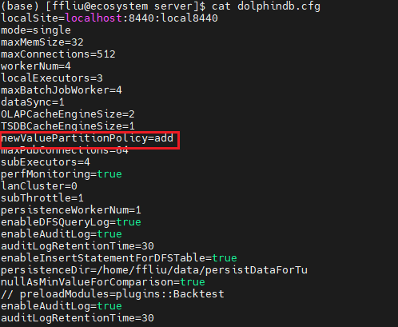如是 RANGE 分区，不支持自增，请检查写入数据的范围是否超过了建库时设置的范围，如超过了需要手动调用函数 addRangePartitions 增加分区，然后再写入数据。
4.5 下一步阅读
- 文本导入：文本数据导入 金融 PoC 用户历史数据导入指导手册之股票 Level-2 逐笔篇
- 数据清洗： 利用 DolphinDB 高效清洗数据
- 行情数据：easyNSQ 实时行情数据接入功能模块 easyTLDataImport 通联历史数据自动化导入功能模块
- 数据迁移和导入插件：插件
5. 数据增删改查
5.1 增加数据
在 DolphinDB 中可以通过三种方式写入数据，分别为：
tableInsert函数（推荐）：支持任意表对象的写入，会返回写入的记录数。append!函数：支持任意表对象的写入，会直接对原表进行修改。- insert into 语句：适合于数据量较少的场景，支持内存表写入；从 3.00.1 版本开始，若配置 enableInsertStatementForDFSTable 配置项，则 insert into 也支持分布式表写入。
例：使用三种方式向快照表里追加股票的数据。
use MockData
dbName = "dfs://stock_lv2_snapshot"
tbName = "snapshot"
// 模拟一只股票的数据
date = 2023.01.03
t = stockSnapshot(tradeDate=date, securityNumber=1)使用 tableInsert 写入：
re2 = loadTable(dbName, tbName).tableInsert(t)
re2 // output: 4802使用 append! 写入：
re1 = loadTable(dbName, tbName).append!(t)
select count(*) from re1使用 insert into 语句写入：
getConfig(`enableInsertStatementForDFSTable) // true
insert into snaptb values(2023.01.03,09:30:00.000,'',"000001",'',"OCALL",2,1.045,37,0,10001.799999999999272,
1.4,1.41,1.631,1.633,0,0,0,0,0,0,0,22300,7.002,0,12100,7.002,0,0,0,0,0,
array(DOUBLE[]).append!([[6.940000000000001,6.940000000000001,6.950000000000001,6.97,6.980000000000001,6.990000000000001,7.02,7.05,7.08,7.1]]),
array(DOUBLE[]).append!([[7.09,7.06,7.05,7.04,7.030000000000001,7.01,6.990000000000001,6.980000000000001,6.950000000000001,6.92]]),
array(INT[]).append!([[32400,32400,33300,36900,36900,36900,39600,41400,41400,44100]]),
array(INT[]).append!([[48600,48600,47700,46800,42300,41400,40500,40500,34200,31500]]),
array(INT[]).append!([[20,20,18,18,17,17,16,16,15,13]]),
array(INT[]).append!([[10,10,12,16,17,17,17,18,18,19]]),
0,0,0,0,0,0,0,0,1,1000,2454.300000000000181,30,45000,31392.200000000000727,237,237,204,210,236,226,10:57:45.000,1,
array(LONG[]).append!([[,0,0,0,3600,5200,5200,12400,15600,15600]]),
array(LONG[]).append!([[,0,100,3500,3600,3900,5900,12400,13500,15600]]))思考题：
（1）对比上述三种写入数据的方式，对于分布式表而言，哪种写入方式是最方便的？
（2）使用 insert into 写入数据到分布式表，对写入性能有何影响?
5.2 查询数据
在 DolphinDB 中内存对象可以直接通过切片、索引下标取数，且支持应用于函数直接进行计算，不光是向量、矩阵支持这种特性，内存表也同样支持。但是对于分区表、分布式表仅支持使用 SQL 语句进行访问。
表 5-1 不同类型表的访问方式
| 操作方式 | 普通内存表 | 分区内存表、分布式表（dfs 分区表、维度表） |
|---|---|---|
|
索引、切片 |
支持 | 不支持 |
|
函数 |
支持 | 不支持 |
|
SQL |
支持 | 支持 |
例 1：查询某日的所有股票数据。
dbName = "dfs://stock_lv2_snapshot"
tbName = "snapshot"
select * from loadTable(dbName, tbName) where TradeDate = 2023.01.03例 2：查询某日股票部分字段的数据。
dbName = "dfs://stock_lv2_snapshot"
tbName = "snapshot"
select concatDateTime(TradeDate, TradeTime) as TradeDateTime,
SecurityID, OfferPrice[0] as offerPx1,
BidPrice[0] as bidPx1
from loadTable(dbName, tbName)
where TradeDate = 2023.01.035.3 删除数据
在 DolphinDB 中，为了应对不同的删除场景，系统支持按行、按分区以及全表删除等多种方式。
5.3.1 硬删除&软删除
在具体分析删除场景前，我们先来了解一下 DolphinDB 内的删除机制。
在 DolphinDB 中，OLAP 引擎采取的是硬删除（物理删除）的方式，而 TSDB 支持软删除（逻辑删除）和硬删除两种方式。
表 5-2 软删除和硬删除的机制对比
| 分类 | 删除方式 | delete 删除机制 |
|---|---|---|
| 硬删除 | 直接从文件中删除数据。 |
|
| 软删除 | 追加写入带删除标记的数据。 |
|
从上述机制可以了解到执行硬删除时，即使是按条件删除几条数据，也需要将相关分区的所有数据读取到内存，删除后再写回去；而软删除仅需要追加数据即可。因此就删除性能而言，硬删除在时间和空间的开销上都更高。但在查询场景下，软删除需要额外对数据进行过滤，因此相比硬删除，其性能更差。详情请参考 软删除 。
5.3.2 删除方法
下表列出了 DolphinDB 支持的多种删除数据的方法，并给出了用法的示例、适用场景的说明。此外，在使用过程中不同的方法有一些使用的注意点和限制，详情参考对应链接的说明。
表 5-3 删除方法及其适用场景
| 方法 | 用法示例 | 适用场景 | 相关链接 |
|---|---|---|---|
| undef 函数 |
|
|
删除库表 |
| delete 语句 |
|
|
删除数据 |
truncate 函数 |
|
|
|
dropPartition 函数 |
|
|
删除分区 |
|
|
|
|
删除库表 |
| drop 语句 |
|
|
表 5-4 不同删除方法的特点比较
| 方法 | 支持内存表 | 支持分布式表 | 支持 MVCC | 支持事务 | 是否保留表、字段结构 |
|---|---|---|---|---|---|
| delete 语句 | |||||
truncate 函数 |
|||||
dropPartition 函数 |
|||||
dropTable 函数 |
|||||
| drop 语句 |
- 多版本并发控制（MVCC）：在写入、更新和删除数据时创建新的数据版本，而不是直接覆盖原有数据版本，从而实现读写分离。这种机制使得并发读操作能够继续访问旧版本的数据快照，不会受到写操作的影响，确保数据一致性和高效的并发性能。
- 事务（Transaction）： 是数据库系统中一个完整的、不可分割的操作单元。事务的主要目标是确保数据库的一致性和可靠性，即使在并发操作或系统故障的情况下，数据库仍能保持正确的状态。
例 1：删除某日的所有股票的快照数据。
由于该表是按天进行分区的，因此直接调用
dropPartition函数删除整个分区即可。由于该快照数据库采用的是组合分区，可以通过指定条件的方式进行删除。
dbName = "dfs://stock_lv2_snapshot"
tbName = "snapshot"
db = database(dbName)
dropPartition(db, [2023.01.04], tableName=tbName) 例 2：删除某个 ID 的所有股票数据。
由于股票字段采用的是 HASH 分区，无法通过直接删除分区的方式删除某只股票的数据，此时可以借助 delete 语句按照条件进行删除。
dbName = "dfs://stock_lv2_snapshot"
tbName = "snapshot"
delete from loadTable(dbName, tbName) where SecurityId = "000001"5.3.3 场景性能分析
本节结合实际案例，对比说明不同场景下如何选择更优的删除方式。
示例库表创建脚本：
use MockData
drop database if exists "dfs://k_minute_level"
create database "dfs://k_minute_level"
partitioned by VALUE(2020.01.01..2021.01.01)
engine='OLAP'
create table "dfs://k_minute_level"."k_minute"(
securityid SYMBOL
tradetime TIMESTAMP
open DOUBLE
close DOUBLE
high DOUBLE
low DOUBLE
vol INT
val DOUBLE
vwap DOUBLE
)
partitioned by tradetime
go
dates = getMarketCalendar('XSHE', 2022.01.01, 2022.01.31)
t = stockMinuteKLine(dates[0], dates[dates.size()-1], 10)
loadTable("dfs://k_minute_level", "k_minute").append!(t)场景一：删除部分分区数据，推荐使用函数 dropPartition。
对比删除单个分区场景下，delete 和 dropPartition 函数的性能：
// delete 删除 2022.01.04 的数据
timer delete from loadTable("dfs://k_minute_level", "k_minute") where date(tradetime) = 2022.01.04 // Time elapsed: 4.099 ms
// Time elapsed: 20.049 ms
// dropPartition 删除 2022.01.05 的数据
db = database("dfs://k_minute_level")
timer dropPartition(db, [2022.01.05], tableName="k_minute")
// Time elapsed: 5.978 ms对比删除多个分区场景下，delete 和 dropPartition 函数的性能：
// delete 删除多个分区数据
timer delete from loadTable("dfs://k_minute_level", "k_minute") where date(tradetime) between 2022.01.01 and 2022.01.31 // Time elapsed: 4.099 ms
// Time elapsed: 469.155 ms
// 将 delete 删除的数据重写回去
loadTable("dfs://k_minute_level", "k_minute").append!(t)
// dropPartition 删除多个分区数据
db = database("dfs://k_minute_level")
timer dropPartition(db, 2022.01.01..2022.01.31, tableName="k_minute")
// Time elapsed: 35.645 ms对比发现 dropPartition 函数的删除性能明显优于 delete 语句。这是因为 delete 语句具有
SQL 解析的开销。 此外，需要注意的是由于 delete 支持 MVCC
机制，在删除时会产生多个版本的数据副本占用额外磁盘空间，且与
dropPartition 直接删除分区数据文件不同，delete
会将数据读取到内存后再进行删除。因此，在内存受限的场景下，delete 操作可能会导致内存溢出。推荐运维时使用
dropPartition 函数删除数据。
场景二：删除全表数据， 推荐使用 truncate、 dropTable
或 drop 语句。
对比 delete、truncate 以及
dropTable 的性能：
// delete
timer delete from loadTable("dfs://k_minute_level", "k_minute")
// Time elapsed: 495.771 ms
// truncate
timer truncate("dfs://k_minute_level", "k_minute_1")
// Time elapsed: 70.856 ms
// dropTable
db = database("dfs://k_minute_level")
timer dropTable(db, "k_minute_2")
// Time elapsed: 71.254 ms删除后，再次查询表数据：
// delete
select count(*) from loadTable("dfs://k_minute_level", "k_minute") // output: 0
// truncate
select count(*) from loadTable("dfs://k_minute_level", "k_minute_1") // output: 0
// dropTable
select count(*) from loadTable("dfs://k_minute_level", "k_minute_2")
// error: getFileBlocksMeta on path '/k_minute_level/k_minute_2.tbl' failed, reason: path does not exist对比性能开销，可以发现在删除全表数据的场景下， truncate 和
dropTable 是比较推荐的方式。两者的区别在于，truncate
保留原表结构只是删除了数据，而 dropTable 会将表结构也删除。
场景三：数据导入分布式表时，写入了重复数据，希望对该表进行去重。
对比 delete 方法和 dropPartition 删除分区重写的方式：
t1 = stockMinuteKLine(2022.01.04, 2022.01.05, 10)
// 写入 2 天重复数据
loadTable("dfs://k_minute_level", "k_minute").append!(t1)
// delete statement
timer delete from loadTable("dfs://k_minute_level", "k_minute") where isDuplicated([securityid, tradetime], FIRST) = true map
// Time elapsed: 271.374 ms
// 写入 2 天重复数据
loadTable("dfs://k_minute_level", "k_minute").append!(t1)
// rewrite data
timer{
tmp = select * from loadTable("dfs://k_minute_level", "k_minute") where isDuplicated([securityid, tradetime], FIRST) = false map
truncate("dfs://k_minute_level", "k_minute")
loadTable("dfs://k_minute_level", "k_minute").append!(tmp)
}
// Time elapsed: 86.429 msisDuplicated
是顺序敏感函数，无法直接在查询分布式表的条件语句中使用， 此处增加了分区限定关键字词 map，使语句不跨分区执行。该场景下，比起使用 delete + isDuplicate
函数条件删除，查出去重后的数据、全表删除然后重新写入是性能更好的方式。
但是对于社区用户，由于内存资源有限，delete 去重或一次性查询重写去重都可能会导致内存 OOM，因此可以改写成遍历分区的方式执行。参考脚本如下：
dates = getTabletsMeta("%k_minute_level/%").dfsPath.split("/")[2].temporalParse("yyyyMMdd")
timer{
for(date in dates){
tmp = select * from loadTable("dfs://k_minute_level", "k_minute") where partition(tradetime, date), isDuplicated([securityid, tradetime], FIRST) = false
dropPartition(db, [date], tableName="k_minute")
loadTable("dfs://k_minute_level", "k_minute").append!(tmp)
}
}
// Time elapsed: 301.925 ms5.4 更新数据
DolphinDB 的数据更新和数据删除的机制类似，每次更新时，由于 MVCC 机制，系统会额外产生数据副本存储在磁盘上，由系统定时回收；对于 TSDB 引擎，在配置数据保留策略为保留最新一条的场景下，更新也和软删除类似，以追加的方式实现。
最基础的更新方式就是通过 update 语句实现，如果要基于某些字段组成的键进行更新（该键存在）或追加（该键不存在），则可以使用
upsert! 函数。
例 1. 向快照表追加并更新买卖 1 档报价的信息。
dbName = "dfs://stock_lv2_snapshot"
tbName = "snapshot"
// 分布式表无法通过 update 直接追加字段，需要通过 addColumn
loadTable(dbName, tbName).addColumn(["OfferPx1", "BidPrice1"], [DOUBLE, DOUBLE])
// 更新更新买卖 1 档报价的信息
update loadTable(dbName, tbName) set OfferPx1 = OfferPrice[0], BidPrice1 = BidPrice[0] where TradeDate == 2022.12.01例 2. 向快照表写入数据时，希望根据时间和股票代码进行去重写入。
// 模拟写入的数据
use MockData
date = 2023.01.03
t = stockSnapshot(tradeDate=date, securityNumber=1)
// 如果执行了增加列字段的代码，需要执行此步
update t set OfferPx1 = OfferPrice[0], BidPrice1 = BidPrice[0]
// 向分布式表进行去重写入
loadTable(dbName, tbName).upsert!(t, keyColNames=["TradeDate", "TradeTime", "SecurityID"])5.5 下一步阅读
- SQL 编程：SQL 标准化 SQL 编写案例
- 增删改查：数据库操作 分布式表数据更新原理和性能 软删除
6. 基于 SQL 的批计算
本章将讲解如何使用 SQL 进行常见的数据处理，包括查询、聚合、时序分析、行列转换、关联查询、更新删除等操作，并基于 DolphinDB 数据表，从金融场景涉及的通用表操作出发，结合案例进行演示。
6.1 库表加载
对于已经创建的库表，DolphinDB 可以借助 database 函数进行加载，参考脚本如下：
dbName = "dfs://stock_lv2_snapshot"
snapdb = database(dbName)
schema(snapdb)如果是在对应数据目录（cataLog）下创建的库表，则可以用 “use catalog xxx” 的方式加载数据目录，例如：
use catalog trading
select count(*) from stock_lv2_snapshot.snapshot详情请参考 数据目录 。
同样，分布式表的加载也可以借助 loadTable 函数进行，参考脚本如下：
dbName = "dfs://stock_lv2_snapshot"
tbName = "snapshot"
snaptb = loadTable(dbName, tbName)
select count(*) from snaptb
// 或者 select count(*) from loadTable(dbName, tbName)除了借助函数，还可以通过 “数据库句柄”.”数据库表名” 访问分布式表：
dbName = "dfs://stock_lv2_snapshot"
snapdb = database(dbName)
select count(*) from snapdb.snapshot6.2 分区剪枝
DolphinDB 在 SQL 查询、更新和删除数据时，支持根据 where 条件对查询进行优化。最常用的优化之一就是如果过滤条件包含分区字段，则查询、更新和删除时，系统能够支持按照分区信息进行剪枝处理，减少扫描的分区数。
例 1. 查询 2022.12.01 ~ 2022.12.03 日期范围内的数据
触发分区剪枝的场景：使用 between 语句、非链式的过滤条件
select [HINT_EXPLAIN] * from loadTable(dbName, tbName) where TradeDate between 2022.12.01 and 2022.12.03
select [HINT_EXPLAIN] * from loadTable(dbName, tbName) where TradeDate >= 2022.12.01 and TradeDate <= 2022.12.03
// output:
// 可以看到查询遍历的分区数为 90
"map": {\n' +
' "partitions": {\n' +
' "local": 90,\n' +
' "remote": 0\n' +
' },\n' + "sql": ...
' }无法触发分区剪枝的场景：链式条件过滤
select [HINT_EXPLAIN] * from loadTable(dbName, tbName) where 2022.12.01 <= TradeDate <= 2022.12.03
// output:
// 可以看到查询遍历的分区数为 10891
"map": {\n' +
' "partitions": {\n' +
' "local": 10891,\n' +
' "remote": 0\n' +
' }例 2. 查询某只、某几只股票的数据
使用等值查询，in 查询都可以触发分区剪枝。
select [HINT_EXPLAIN] * from loadTable(dbName, tbName) where SecurityID = "000001"
// output:
// 可以看到查询遍历的分区数为 243
"map": {\n' +
' "partitions": {\n' +
' "local": 243,\n' +
' "remote": 0\n' +
' }
select [HINT_EXPLAIN] * from loadTable(dbName, tbName) where SecurityID in ["000001", "000002"]
// output:
// 可以看到查询遍历的分区数为 485
"map": {\n' +
' "partitions": {\n' +
' "local": 485,\n' +
' "remote": 0\n' +
' }例 3. 查询股票 ”000001“ 在 2022 年 2 月的快照数据。
对于时间类型的分区列应用时间精度更低的函数，也可以进行分区剪枝，缩小分区范围。
select [HINT_EXPLAIN] * from loadTable(dbName, tbName) where month(TradeDate) = 2022.02M and SecurityID = "000001"
// output:
// 可以看到查询遍历的分区数为 16
"map": {\n' +
' "partitions": {\n' +
' "local": 16,\n' +
' "remote": 0\n' +
' }6.3 单点查询
与 OLAP 引擎不同，TSDB 引擎额外维护了一个键值索引（通过配置参数 sortColumns 指定），因此除了分区剪枝外，在过滤条件中指定键值字段，也可以加速查询。索引的组织形式详见 TSDB 存储引擎详解 3.3.1 节对索引键的说明。
可以通过 schema 函数查看 sortColumns 配置的值：
dbName = "dfs://stock_lv2_snapshot"
tbName = "snapshot"
loadTable(dbName, tbName).schema().sortColumns
// output: ["SecurityID","TradeTime"]该sortColumns 属性显示索引键是 securityID（除最后一个时间列外的其他字段构成索引键），且每个索引对应的数据按照 TradeTime 顺序存储在磁盘上。SecurityID 字段既是分区列又是索引键，如果查询条件包含 securityID 不仅可以进行分区剪枝，还可以根据内存中维护的索引信息快速定位到数据块。
以查询某天某只股票的数据为例，通过 [HINT_EXPLAIN] 获取 SQL 执行计划，观察是否命中索引：
select [HINT_EXPLAIN] * from loadTable(dbName, tbName) where TradeDate = 2022.12.01 and SecurityID = "000002"
// output:
// 打印信息的 where 部分包含查询涉及扫描的数据块个数和命中的索引条件数
"where": {\n' +
' "TSDBIndexPrefiltering": {\n' +
' "blocksToBeScanned": 62,\n' +
' "matchedWhereConditions": 1\n' +
' }6.4 聚合计算
在金融场景下，聚合指标是策略不可或缺的一部分，有助于帮助交易员、分析员快速识别市场趋势，做出基于数据的策略调整。以股票数据为例，常用的聚合方式有以下两种：
- 按照交易时间聚合
- 按股票标的聚合
下面综合上述场景，结合具体例子来进行说明。
例1：基于历史数据计算 5 分钟 K 线高开低收（OHLC）和总量。
// 模拟数据
n = 1000000
date = take(2019.11.07 2019.11.08, n)
time = (09:30:00.000 + rand(int(6.5*60*60*1000), n)).sort!()
timestamp = concatDateTime(date, time)
price = 100+cumsum(rand(0.02, n)-0.01)
volume = rand(1000, n)
symbol = rand(`AAPL`FB`AMZN`MSFT, n)
trade = table(symbol, date, time, timestamp, price, volume).sortBy!(`symbol`timestamp)
// 计算 OHLC 和 Volume
barMinutes = 5
OHLC = select first(price) as open, max(price) as high, min(price) as low, last(price) as close, sum(volume) as volume from trade group by symbol, date, bar(time, barMinutes*60*1000) as barStart这里用到了四个函数 max, first, min,
low 分别用于计算窗口内数据的高开低收聚合值，sum 用于计算总量。
K 线窗口借助 group by 分组语句进行划分：脚本 group by symbol, date, bar(time,
barMinutes*60*1000) as barStart 表示按照股票代码、日期、5分钟时间窗口划分，其中 bar
函数用于按照时间将每 5 分钟的数据划分为一组。
例 1 只是计算 K 线最精简的一个例子，在实际场景中可能还会涉及非常复杂的数据处理过程，本节将在例 2 进行具体的讲解。
例2：基于历史快照数据合成分钟 K 线。如果某只股票在某一分钟无数据，则填充为 0。
Step1. 变量函数定义
- 自定义最高价最低价计算函数
// 自定义计算最高最低点的聚合函数
// defg 用于声明聚合函数
defg high(DeltasHighPrice, HighPrice, LastPrice){
if(sum(DeltasHighPrice)>0.000001){
return max(HighPrice)
}
else{
return max(LastPrice)
}
}
defg low(DeltasLowPrice, LowPrice, LastPrice){
sumDeltas = sum(DeltasLowPrice)
if(sumDeltas<-0.000001 and sumDeltas!=NULL){
return min(iif(LowPrice==0.0, NULL, LowPrice))
}
else{
return min(LastPrice)
}
}Step2. 数据预处理
- 把09:25:00-09:30:00的数据归入第一根 K 线：[09:30:00, 09:31:00]
- 计算同一个股票或者基金的两笔相邻快照的最高价和最低价的变化幅度
- 计算同一个股票或者基金的两笔相邻快照的成交量、成交金额和成交笔数的增量
dbName = "dfs://stock_lv2_snapshot"
tbName = "snapshot"
tempTB1 = select TradeDate,
iif(TradeTime <=09:30:00.000, 09:30:00.000, TradeTime) as TradeTime,
SecurityID,
OpenPrice,
PreCloPrice,
HighPrice,
LowPrice,
LastPrice,
PreCloseIOPV,
IOPV,
UpLimitPx,
DownLimitPx,
iif(deltas(HighPrice)>0.000001, 1, 0) as DeltasHighPrice,
iif(abs(deltas(LowPrice))>0.000001, -1, 0) as DeltasLowPrice,
iif(deltas(TotalVolumeTrade)==NULL, TotalVolumeTrade, deltas(TotalVolumeTrade)) as DeltasVolume,
iif(deltas(TotalValueTrade)==NULL, TotalValueTrade, deltas(TotalValueTrade)) as DeltasTurnover,
iif(deltas(NumTrades)==NULL, NumTrades, deltas(NumTrades)) as DeltasTradesCount
from loadTable(dbName, tbName)
where TradeTime >=09:25:00.000
context by SecurityIDStep3. K 线计算
针对处理后的快照行情进行窗口为1分钟、步长为1分钟的滚动窗口计算。
re = select firstNot(LastPrice, 0) as OpenPrice,
high(DeltasHighPrice, HighPrice, LastPrice) as HighPrice,
low(DeltasLowPrice, LowPrice, LastPrice) as LowPrice,
last(LastPrice) as ClosePrice,
sum(DeltasVolume) as Volume,
sum(DeltasTurnover) as Turnover,
sum(DeltasTradesCount) as TradesCount,
last(PreCloPrice) as PreClosePrice,
last(PreCloseIOPV) as PreCloseIOPV,
last(IOPV) as IOPV,
last(UpLimitPx) as UpLimitPx,
last(DownLimitPx) as DownLimitPx,
lastNot(LastPrice, 0)\firstNot(LastPrice, 0)-1 as FirstBarChangeRate
from tempTB1
group by SecurityID, TradeDate, interval(X=TradeTime, duration=60s, label='left', fill=0) as TradeTime该部分使用了一个关键的 SQL 语句 group by 进行分组聚合计算，group by 只能够搭配聚合指标使用，上述代码中的
firstNot, high, low,
last, sum, lastNot
等等都是聚合函数。
group by 指定的分组指标是 SecurityID, TradeDate, interval(X=TradeTime, duration=60s,
label='left', fill=0)，即股票字段、日期、分钟时间。interval 函数必须与 group by
语句搭配使用，通常用于时间精度的降维场景，此处 interval 函数将毫秒精度的时间字段，按照分钟窗口进行划分，缺失值填充为
0。
部分计算结果示意如下：
SecurityID TradeDate TradeTime OpenPrice HighPrice LowPrice ClosePrice Volume Turnover TradesCount ...
---------- ---------- ------------ --------- --------- -------- ---------- ------ --------------------- ----------- ---
000002 2022.01.04 09:30:00.000 1.6 1.779 1.003 1.3 100 10022.200000000000727 94 ...
000002 2022.01.04 09:31:00.000 1.5 1.756 1.003 1.4 0 0 0 ...
000002 2022.01.04 09:32:00.000 1.6 1.777 1.011 1.5 0 0 0 ...
000002 2022.01.04 09:33:00.000 1.5 1.791 1.01 1.5 0 0 0 ...
000002 2022.01.04 09:34:00.000 1.4 1.791 1.042 1.5 0 1.5 -39 ...
000002 2022.01.04 09:35:00.000 1.5 1.794 1.003 1.5 0 0 0 ...
...先将上述 K 线的计算逻辑封装在一个函数内。
def calcKLine(snapshot){
tempTB1 = select TradeDate,
iif(TradeTime <=09:30:00.000, 09:30:00.000, TradeTime) as TradeTime,
SecurityID,
OpenPrice,
PreCloPrice,
HighPrice,
LowPrice,
LastPrice,
PreCloseIOPV,
IOPV,
UpLimitPx,
DownLimitPx,
iif(deltas(HighPrice)>0.000001, 1, 0) as DeltasHighPrice,
iif(abs(deltas(LowPrice))>0.000001, -1, 0) as DeltasLowPrice,
iif(deltas(TotalVolumeTrade)==NULL, TotalVolumeTrade, deltas(TotalVolumeTrade)) as DeltasVolume,
iif(deltas(TotalValueTrade)==NULL, TotalValueTrade, deltas(TotalValueTrade)) as DeltasTurnover,
iif(deltas(NumTrades)==NULL, NumTrades, deltas(NumTrades)) as DeltasTradesCount
from snapshot
where TradeTime >= 09:25:00.000
context by SecurityID
re = select firstNot(LastPrice, 0) as OpenPrice,
high(DeltasHighPrice, HighPrice, LastPrice) as HighPrice,
low(DeltasLowPrice, LowPrice, LastPrice) as LowPrice,
last(LastPrice) as ClosePrice,
sum(DeltasVolume) as Volume,
sum(DeltasTurnover) as Turnover,
sum(DeltasTradesCount) as TradesCount,
last(PreCloPrice) as PreClosePrice,
last(PreCloseIOPV) as PreCloseIOPV,
last(IOPV) as IOPV,
last(UpLimitPx) as UpLimitPx,
last(DownLimitPx) as DownLimitPx,
lastNot(LastPrice, 0)\firstNot(LastPrice, 0)-1 as FirstBarChangeRate
from tempTB1
group by SecurityID, TradeDate, interval(X=TradeTime, duration=60s, label='left', fill=0) as TradeTime
return re
}然后利用 mr 函数指定 parallel 参数为 false
进行分区串行计算。此处选取了一个月的数据进行演示，其中 sqlDS 函数可以根据指定的 SQL
查询筛选数据，并按分区生成数据源列表。
beginDate = 2022.01.01
endDate = 2022.01.31
dbName = "dfs://stock_lv2_snapshot"
tbName = "snapshot"
ds = sqlDS(<select * from loadTable(dbName, tbName) where TradeDate between beginDate and endDate>)
re = mr(ds, calcKLine, , unionAll, false)
select top 10 * from re order by SecurityId
/* output:
SecurityID TradeDate TradeTime OpenPrice HighPrice LowPrice ClosePrice Volume Turnover TradesCount ...
---------- ---------- ------------ --------- --------- -------- ---------- ------ --------------------- ----------- ---
000001 2022.01.04 09:30:00.000 1.6 1.794 1.064 1.3 0 10000.200000000000727 53 ...
000001 2022.01.04 09:31:00.000 1.4 1.767 1.011 1.3 0 0 0 ...
000001 2022.01.04 09:32:00.000 1.6 1.8 1.046 1.4 0 0 0 ...
000001 2022.01.04 09:33:00.000 1.6 1.736 1.033 1.4 0 0 0 ...
000001 2022.01.04 09:34:00.000 1.6 1.772 1.063 1.3 0 0 0 ...
000001 2022.01.04 09:35:00.000 1.3 1.758 1.035 1.6 0 0.799999999999272 -41 ...
000001 2022.01.04 09:36:00.000 1.4 1.784 1.013 1.5 0 0 0 ...
000001 2022.01.04 09:37:00.000 1.4 1.79 1.006 1.5 0 0 0 ...
000001 2022.01.04 09:38:00.000 1.6 1.781 1.024 1.5 0 0 0 ...
000001 2022.01.04 09:39:00.000 1.5 1.697 1.024 1.6 0 0 0 ...
*/
6.5 时序分析
在金融领域，时间序列分析是一种重要的工具，它可以帮助理解数据的趋势、季节性、随机性等特征，并进行准确的预测。例如，在股票价格预测、货币汇率预测、通胀率预测等方面，时间序列分析被广泛应用于揭示金融数据随时间变化的规律。为应对此类场景，DolphinDB 提供了滑动窗口、累积窗口、序列计算等内置函数，以及 Talib、MyTT 算子指标库和 Alpha 因子库等模块，用户可以利用这些函数的组合和嵌套构建复杂的时序指标算子。
例：基于快照数据计算订单失衡率（SOIR）因子
该因子用于衡量买卖委托量在总量中的不均衡程度。t 时刻第 i 档的订单失衡率因子定义如下，具体参数说明参考 3.1.2 节。
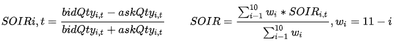使用 DolphinDB 的脚本实现上述因子的定义：此处使用 rowWavg
函数计算各档加权平均的买卖委托量不均衡程度因子，即订单失衡率因子。并使用 moving 系列函数对一段时间的指标进行移动标准化处理。
def wavgSOIR(bidQty,askQty,lag=20){
imbalance= rowWavg((bidQty - askQty)\(bidQty + askQty), 10 9 8 7 6 5 4 3 2 1).ffill().nullFill(0)
mean = mavg(prev(imbalance), (lag-1), 2)
std = mstdp(prev(imbalance) * 1000000, (lag-1), 2) \ 1000000
return iif(std >= 0.0000001,(imbalance - mean) \ std, NULL).ffill().nullFill(0)
}
re = select SecurityID, TradeDate, TradeTime, wavgSOIR(bidOrderQty, OfferOrderQty, lag=20) as HeightImbalance from loadTable(dbName, tbName) where TradeDate between beginDate and endDate context by SecurityID csort TradeTime
select top 10 * from re
/* output:
SecurityID TradeDate TradeTime HeightImbalance
---------- ---------- ------------ ------------------
000001 2022.01.04 09:30:00.000 0
000001 2022.01.05 09:30:00.000 0
000001 2022.01.06 09:30:00.000 -4.710845145045806
000001 2022.01.07 09:30:00.000 10.571487776713668
000001 2022.01.10 09:30:00.000 1.688837114535889
000001 2022.01.04 09:30:03.000 -0.761301248682889
000001 2022.01.05 09:30:03.000 -0.494321354433684
000001 2022.01.06 09:30:03.000 -0.963245349720814
000001 2022.01.07 09:30:03.000 1.708213822850803
000001 2022.01.10 09:30:03.000 1.387502605818854
*/
6.6 截面计算
除了纵向的时序计算外，在金融场景下还需要横向对同一时间截面上不同股票的数据进行一些比较或计算。要对比同一截面不同股票的指标，就需要将原本的窄表进行一些行列转换，使之转成面板数据。为此，DolphinDB
在 SQL 语义上拓展提供了 pivot by 语句，并开发了用于内存计算的
pivot、panel 函数。
pivot 操作基于指定的维度（通常是时间和标的）将某一个属性值展开成面板数据，通常用于将一个窄表转换成宽表/矩阵，然后进行计算。
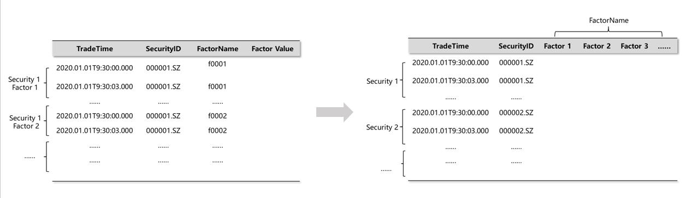在 DolphinDB 中使用 exec+pivot by 语句可以将一个表转换成一个面板矩阵，矩阵的行列标签记录了面板数据的维度信息。以一个简单的例子进行说明。
原表 t 定义如下：
sym = `C`MS`MS`MS`IBM`IBM`C`C`C
price= 49.6 29.46 29.52 30.02 174.97 175.23 50.76 50.32 51.29
qty = 2200 1900 2100 3200 6800 5400 1300 2500 8800
timestamp = [09:34:07,09:35:42,09:36:51,09:36:59,09:35:47,09:36:26,09:34:16,09:35:26,09:36:12]
t = table(timestamp, sym, qty, price);
/* output:
timestamp sym qty price
--------- --- ---- -------------------
09:34:07 C 2200 49.600000000000001
09:35:42 MS 1900 29.46
09:36:51 MS 2100 29.519999999999999
09:36:59 MS 3200 30.019999999999999
09:35:47 IBM 6800 174.969999999999998
09:36:26 IBM 5400 175.229999999999989
09:34:16 C 1300 50.759999999999997
09:35:26 C 2500 50.32
09:36:12 C 8800 51.289999999999999
*/
利用 exec + pivot by 将表 t 转成面板矩阵：
m = exec price from t pivot by timestamp, sym;
m
/* output:
C IBM MS
------------------ ------------------- ------------------
09:34:07|49.600000000000001
09:34:16|50.759999999999997
09:35:26|50.32
09:35:42| 29.46
09:35:47| 174.969999999999998
09:36:12|51.289999999999999
09:36:26| 175.229999999999989
09:36:51| 29.519999999999999
09:36:59| 30.019999999999999
*/
typestr m
// output: 'FAST DOUBLE MATRIX'
m.colNames() // output: ["C","IBM","MS"]
m.rowNames() // output: [09:34:07,09:34:16,09:35:26,09:35:42,09:35:47,09:36:12,09:36:26,09:36:51,09:36:59]了解了 pivot by 的基本使用，下面结合具体的金融数据进行举例。
例：根据每天每只股票最后的 LastPrice 价格计算排名。
此处 pivot by 用于指定截面的维度信息，此处是日期和股票代码，由于同一个日期对应多个数据，因此计算时可以配合聚合指标使用。
m = exec last(LastPrice) from loadTable(dbName, tbName) pivot by TradeDate, SecurityID
rowRank(m)
/* output:
000001 000002 000003 000004 000005 000006 000007 000008 000009 000010 000011 000012 000013 000014 000015 ...
------ ------ ------ ------ ------ ------ ------ ------ ------ ------ ------ ------ ------ ------ ------ ------ ---
2022.01.04|87 0 26 26 0 26 58 26 87 0 26 26 0 0 58 ...
2022.01.05|84 20 20 47 84 47 84 47 0 20 47 20 0 47 84 ...
2022.01.06|84 17 84 84 84 47 17 17 47 47 84 47 17 0 47 ...
2022.01.07|50 0 50 12 83 50 0 12 50 12 12 50 0 12 50 ...
2022.01.10|45 15 15 15 15 74 74 0 45 15 74 15 74 45 74 ...
...
*/
6.7 常见问题
- 如何在写入分布式表时对数据进行去重？
- TSDB 引擎 sortColumns 去重：系统会根据索引配置字段 sortColumns 进行去重，但是该方式不适用于每个索引键（除最后一列时间列以外的 sortColumns 字段构成索引键）对应的数据量很少的场景，因为索引键的主要作用是数据索引，若设置为去重键会造成索引膨胀，影响查询效率。
- 使用
upsert! 方法写入数据：upsert! 支持设置数据键 keyColNames，使用upsert!写入新数据时，系统会去检查原有数据中该数据键是否已经存在，若存在则更新主键的数据，否则追加。通过该方式以达到数据去重的目的。
- 如何写脚本可以优化查询性能，查询很慢的原因是什么?
一个查询是否可以优化，主要是看以下的方面：
- 是否能够触发分区剪枝，缩小系统遍历范围？ → where 条件是否可以改写为触发剪枝的条件
- 是否走了分布式查询的优化？ → 如果是自定义函数，无法进行分布式查询优化，是否可以通过 mr 函数进行逻辑改写。
查询慢的原因可以参考文档 查询/写入慢 进行排查。
- 查询的字段调用了自定义的函数，会对性能有影响吗，会走分布式查询的优化吗？
如果没有通过 mapr 关键字声明，则自定义函数无法进行分布式查询优化，此时有几种优化方案：
- 计算数据不跨分区：在查询语句后添加 map 关键字。例如：
select first(id), count(*) from pt map。 - 计算数据跨分区：通过函数
mr定义分布式计算逻辑。参数 mapFunc 指定函数会映射到各个分区进行执行，并将计算结果通过 reduceFunc 进行处理汇总后，通过 finalFunc 进行最后的计算。案例参考 通用计算 。
- 计算数据不跨分区：在查询语句后添加 map 关键字。例如：
- 查询字段多造成脚本复杂，可以如何优化代码？
可以通过元编程或者字段序列的方式去定义脚本。
例：查询字段 col000~col999 的数据
// 元编程 cols="col" + lpad(string(0..999), 3, "0") <select _$$cols from t>.eval() // 字段序列 select col000...col999 from t字段序列对于字段名和查询场景都有限制，与之相比元编程的使用范围更广。
例：计算多个字段的最小二乘回归。
colName = "y" x = `SH000001`SH000003`SH000005 <select ols(_$colName, _$$x, 1, 2).Residual as residual from t>.eval()具体用法请参考 基于 SQL 的元编程 。
- 如何进行表关联后只保留公共匹配列?
DolphinDB 中表关联的结果会将两边公共列拆成两列返回，例如：
t1= table(1 2 3 as id, 7.8 4.6 5.1 as value) t2 = table(1 3 5 as id, 300 500 800 as qty) fj(t1, t2, `id) /* output: id value t2_id qty -- ----- ----- --- 1 7.8 1 300 2 4.6 3 5.1 3 500 5 800 */如果需要将公共列 id 合成一列返回，可以参考下述脚本：
select t1.id.nullFill(t2.id) as id, value, qty from fj(t1, t2, `id) - 共享表怎么删除，调用
dropTable函数不起作用？dropTable 用于删除分布式表，对于共享内存表可以用
undef("st", SHARED)进行删除。 - update 和 delete 的事务开销很大，这是为什么？
DolphinDB 的分布式数据是按照列式存储（OLAP）或者行列混存（TSDB）的，对于行级别的更新和删除操作，系统以分区为单位读出相关字段的数据到内存，然后进行更新和删除再写回磁盘。因此，如果事务涉及的分区多、分区数据量大，更新和删除的开销也会很大。
如果数据以 TSDB 引擎进行存储，则在某些特定场景和配置下，其更新和删除操作有优化：
- 设置去重策略 keepDuplicates=LAST 时，数据更新以数据追加方式进行。
- 设置去重策略 keepDuplicates=LAST 并开启软删除机制 softDelete=true，则删除操作时，系统取出待删除的数据打上删除标记（软删除），再以追加的方式写回数据库。
上述两种优化后的更新和删除方式效率更高。
- 如何编写查询脚本，使之可以通过命中内部维护的元数据信息，从而加速查询性能？
DolphinDB 内部维护了分区信息、TSDB 引擎还额外维护了 zonemap、sortKey 等信息。理论上可以通过此类元数据信息加速相关的查询。下面以具体的例子进行说明：
例 1：查询分区字段的元数据信息。
场景：按照日期（天）和股票代码的 COMPO 分区，获取所有日期（天）值。
以 4.2.1 导入的快照数据表 snapshot 为例，该表的结构为：
engineType->TSDB keepDuplicates->ALL chunkGranularity->TABLE sortColumns->["SecurityID","TradeTime"] softDelete->0 tableOwner->admin compressMethods->name compressMethods ------------------ --------------- TradeDate delta TradeTime delta MDStreamID lz4 SecurityID lz4 ... tableComment-> colDefs->name typeString typeInt extra comment ------------------ ---------- ------- ----- ------------ TradeDate DATE 6 交易日期 TradeTime TIME 8 交易时间 MDStreamID SYMBOL 17 ... chunkPath-> partitionColumnIndex->[0,3] partitionColumnName->["TradeDate","SecurityID"] partitionColumnType->[6,17] partitionType->[1,5] partitionTypeName->["VALUE","HASH"] partitionSchema->([2022.01.04,2022.01.05,2022.01.06,2022.01.07,2022.01.10,2022.01.11,2022.01.12,2022.01.13,2022.01.14,2022.01.17,2022.01.18,2022.01.19,2022.01.20,2022.01.21,2022.01.24,2022.01.25,2022.01.26,2022.01.27,2022.01.28,2022.02.07,2022.02.08,2022.02.09,2022.02.10,2022.02.11,2022.02.14,2022.02.15,2022.02.16,2022.02.17,2022.02.18,2022.02.21...],50) partitionSites->分别利用三种方式求所有数据日期的唯一值：
dbName = "dfs://stock_lv2_snapshot" tbName = "snapshot" pt = loadTable(dbName, tbName) // （1）直接利用 distinct 函数求日期唯一值 timer dateList = exec distinct(TradeDate) from pt // Time elapsed: 670.988 ms // （2）利用 group by 的分布式计算求日期唯一值 timer dateList = exec TradeDate from select count(*) from pt group by TradeDate // Time elapsed: 373.783 ms // （3）利用元数据信息求日期的唯一值 timer{ result = exec dfsPath from getTabletsMeta( dbName[5:]+ "/%", tbName, false, -1) where rowNum != 0 dateList = substr(result, regexFind(result, "[0-9]{8}"), 8).distinct().temporalParse("yyyyMMdd").sort() } // Time elapsed: 35.623 ms
比较查询耗时可以发现方案 3 性能最佳，因为它是通过直接解析分区元数据获取日期信息的。
如果创建数据库时，设置的 VALUE 分区方案包含在数据范围内，则利用 VALUE 分区自动拓展的特性，可以通过 schema 函数直接获取日期分区字段的值。
本例中 snapshot 表的分区信息可以通过
schema(pt).partitionSchema[0]获取，获取结果是长度为 244 的向量，较真实的场景多了 2 天，因为 2024.01.01 和 2024.01.02 这两天也被包含了。这是由于在创建数据库时， snapshot 的建库语句为：create database "dfs://stock_lv2_snapshot" partitioned by VALUE(2024.01.01..2024.01.02), HASH([SYMBOL, 50]), engine='TSDB'，其中指定的2024.01.01..2024.01.02也被纳入了元数据信息中，即使该分区并无数据。利用该特性，我们在创建数据库时指定必然有数据的天作为分区 scheme，例如
create database "dfs://stock_lv2_snapshot" partitioned by VALUE(2022.01.04..2022.01.04), HASH([SYMBOL, 50]), engine='TSDB'，这样就可以直接借助 schema 函数更方便地获取元数据信息。例 2：限 TSDB 引擎：查询 count, min, max, sum 等 zonemap 包含的元数据信息。
zonemap 存储了数据的预聚合信息（每列每个 sortKey 对应数据的 min，max，sum，notnullcount）。如果查询语句包含 count, min, max, sum 等预聚合指标，且用户于设置去重策略（keepDuplicates=ALL），就可以利用 zonemap 进行提速。
不同去重策略下，查询的性能对比见 TSDB 存储引擎详解 5.2 节查询全表总记录数（命中元数据）部分。对于 ALL 去重策略，由于查询时无需去重，直接利用 zonemap 提速性能最高。
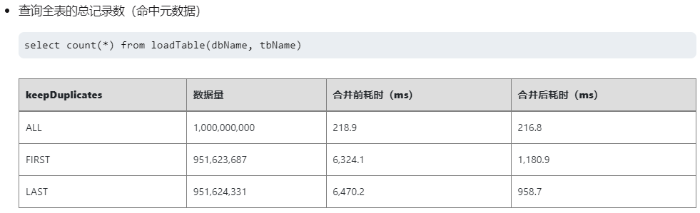例 3：限 TSDB 引擎：查询条件命中 sortKey 索引数据。
dbName = "dfs://stock_lv2_snapshot" tbName = "snapshot" pt = loadTable(dbName, tbName) select [HINT_EXPLAIN] * from pt where SecurityID in ["000076", "000024"] // output： ... "explain": { "where": { "TSDBIndexPrefiltering": { "blocksToBeScanned": 60, // 扫描的 block 个数 "matchedWhereConditions": 1 // 命中 sortKey 的过滤条件 }, ...可以通过 [HINT_EXPLAIN] 执行计划观察查询的过滤条件是否命中索引。
- 如何编写查询脚本，使之可以通过命中内部维护的元数据信息，从而加速查询性能？
6.8 下一步阅读
- 分区剪枝：查询数据 SQL 执行计划
- SQL 操作：量化金融范例
深度不平衡、买卖压力指标、波动率计算
- 聚合计算：K 线计算 基于快照行情的股票和基金 K 线合成
- 时序计算：窗口计算 处理 Level-2 行情数据实例
- 截面计算：面板数据处理
7. 流数据计算
为了便于用户快速入门和理解，本章主要介绍流数据的一些基础概念、框架和流程。结合 API 订阅流数据、消息中间件获取流数据、流引擎计算等具体案例，进一步了解流计算在 DolphinDB 中的应用。
本章涉及到的库表有：
- 基于 3.3 节创建的 "dfs://stock_lv2_snapshot" 库下的快照表 snapshot
- 基于 4.2.3 节创建的 "dfs://stock_trade" 库下的逐笔成交表 trade
本章涉及到流表持久化，需要在 server 配置文件（单机：dolphindb.cfg 集群：cluster.cfg）添加配置项 persistenceDir。
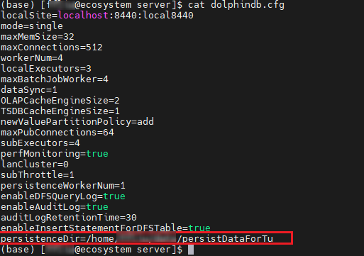7.1 流数据和流计算的定义
流数据是基于事件持续生成的时间序列数据。与静态有界的历史数据不同，流数据具有以下特点：
- 动态：数据流持续动态生成，流的结束没有明确定义，数据的大小与结构也没有固定限制。
- 有序：每条流数据记录都具有时间戳或者序列号，标识了数据在流中的位置与顺序。
- 大规模：流数据通常以高速率生成，数据规模大，对处理引擎的并行处理性能和可扩展性有更高要求。
- 强时效：流数据的强时效性要求极低延迟的读取和处理能力，以最大化数据价值，驱动实时业务决策。
流数据处理是指在实时数据流上进行实时计算和分析的过程，也称为流计算。与批处理不同，流处理无需等待所有数据全部到位，即可按照时间顺序对数据进行增量处理。这种实时处理方式能够高效利用存储与计算资源，适用于需要快速响应和及时决策的应用场景。
表 7-1 批计算和流计算对比
| 批处理 | 流处理 | |
|---|---|---|
| 数据范围 | 对数据集中的所有或大部分数据进行查询或处理 | 对时间窗口内的数据或对最近的数据记录进行查询或处理 |
| 数据大小 | 大批量数据 | 单条记录或包含几条记录的小批量数据 |
| 性能 | 几分钟至几小时的延迟 | 亚毫秒级延迟 |
7.2 发布-订阅
7.2.1 发布-订阅模型
DolphinDB 采用了经典的发布-订阅（Pub-Sub）通信模型，通过消息队列实现流数据的发布与订阅，将流数据生产者（发布者）与消费者（订阅者）解耦。这种模式促进了系统内不同组件之间的通信，提高可伸缩性，改善发送者的响应能力。
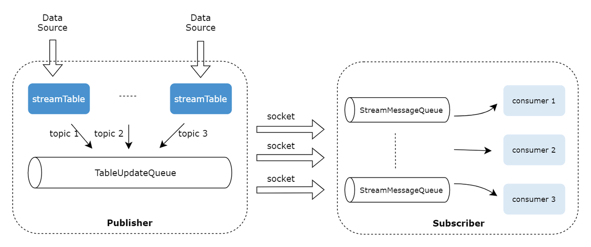- 发布数据：发布端在每个节点上维护一个发布队列。当新的流数据注入到该节点的流数据发布表时，DolphinDB 会将这些数据发送到相应的消息发布队列，再由发布线程将数据发布到各个订阅端的消费队列。
- 订阅数据：每个订阅线程对应一个消费队列。订阅成功提交后，每当有新数据写入流数据发布表时，DolphinDB 会主动通知所有订阅方，订阅线程从消费队列中获取数据进行增量处理。
当发布端发布大量消息造成订阅端来不及处理时，消息会在消费队列进行累积，若消费队列满了，则会反压到发布队列，若发布队列也满了，则会阻塞写入。
7.2.2 发布-订阅流程
在实际金融场景下，一个完整发布-订阅流程：（1）行情数据发布到（写入）流表；（2）用户订阅流表进行计算；（3）计算结果通过 API、插件等发布到其他第三方平台，例如可视化平台展示、下游数据对接等等。
流数据发布
在环节 （1）中，用户通常通过行情插件、消息中间件或 API 将外部订阅的流数据写入流表，或者也可以通过数据回放历史数据写入流表。前者通常应用在实时计算场景，而回放通常是在回测场景使用的。
- 行情插件：华锐 amdQuote, 华泰 INSIGHT, 恒生 NSQ, 盛立 EFH, 中金 DataFeed, CTP, XTP, SSEQuotationFile 等。
- 消息中间件插件：Kafka, zmq, mqtt, RabbitMQ, RocketMQ 等。
- API：Python, C++, Java, Go, R, JavaScript 等。
例 1：回放历史快照表模拟实时数据写入场景。
历史数据回放主要分为2个步骤：
replayDS函数根据历史数据生成回放数据源。replay函数回放历史数据源到目标表对象或流计算引擎。
dbName = "dfs://stock_lv2_snapshot"
tbName = "snapshot"
// 从历史数据生成回放数据源
beginDate = 2022.01.01
endDate = 2022.01.31
ds = replayDS(<select * from loadTable(dbName, tbName) where TradeDate between beginDate and endDate>, dateColumn="TradeDate", timeColumn="TradeTime")
// 定义流计算表
colName=loadTable(dbName, tbName).schema().colDefs.name
colType=loadTable(dbName, tbName).schema().colDefs.typeString
t = streamTable(100:0, colName, colType);
// 持久化流表
enableTableShareAndPersistence(table=t, tableName="st1", cacheSize=100000)
go
// 回放流表
replay(inputTables=ds, outputTables="st1", dateColumn="TradeDate", timeColumn="TradeTime", replayRate=100000, absoluteRate=true)例 2：通过 Python API 将上游流数据实时写入流表。
本脚本使用的测试数据文件如下，解压到自己的目录后，请替换脚本中的 data_path：
通过 Python API 将上游数据写入流表一般分为个步骤：
- 建立到 DolphinDB 数据库的连接。
- 确保 DolphinDB 端订阅的流表已经建立并且存在。
- 初始化
MultithreadedTableWriter（MTW）对象，建立 API 和 server 端流表的连接（dbName 指定为流表名称），并通过 MTW.insert 接口写入数据。 - 等待数据完全写入并打印写入结果。
本例中上游的历史数据是通过遍历 csv 数据模拟的，用户可以将该部分替换成其他数据源，例如 kafka 数据，参考例 3。
import dolphindb as ddb
import numpy as np
import pandas as pd
import dolphindb.settings as keys
# 建立 API 和 server 之间的连接
s = ddb.session()
conn = s.connect(host="ecosystem", port=8440, userid="admin", password="123456")
# 替换为自己的 ip/port
if conn:
print("successfully connected!")
# 定义用于写入的持久化流表
spt = """
dropStreamTable("st2")
dbName = "dfs://stock_lv2_snapshot"
tbName = "snapshot"
colName=loadTable(dbName, tbName).schema().colDefs.name
colType=loadTable(dbName, tbName).schema().colDefs.typeString
t = streamTable(100:0, colName, colType);
enableTableShareAndPersistence(table=t, tableName="st2", cacheSize=100000)
"""
s.run(spt)
# 通过遍历 csv 数据模拟上层实时数据写入
# csv 文件和 python 客户端处于同一台服务器
data_path = "<YOUR_PATH>/2022.01.04.csv"
df = pd.read_csv(data_path)
# 数据预处理：字段类型转换
df["Securityid"] = df["Securityid"].astype('str').apply(lambda x: x.zfill(6))
df["TradeDate"] = pd.to_datetime(df["TradeDate"], format='%Y.%m.%d')
df["TradeTime"] = pd.to_datetime(df["TradeTime"] , format='%H:%M:%S.%f')
df["LocalTime"] = pd.to_datetime(df["LocalTime"] , format='%H:%M:%S.%f')
df["OfferPrice"] = df["OfferPrice"].apply(lambda str: [float(x) if x.strip() else np.NaN for x in str.split(',')])
df["BidPrice"] = df["BidPrice"].apply(lambda str: [float(x) if x.strip() else np.NaN for x in str.split(',')])
df["OfferOrderQty"] = df["OfferOrderQty"].apply(lambda str: [int(x) if x.strip() else None for x in str.split(',')])
df["BidOrderQty"] = df["BidOrderQty"].apply(lambda str: [int(x) if x.strip() else None for x in str.split(',')])
df["BidNumOrders"] = df["BidNumOrders"].apply(lambda str: [int(x) if x.strip() else None for x in str.split(',')])
df["OfferNumOrders"] = df["OfferNumOrders"].apply(lambda str: [int(x) if x.strip() else None for x in str.split(',')])
df["OfferOrder"] = df["OfferOrder"].apply(lambda str: [int(x) if x.strip() else None for x in str.split(',')])
df["BidOrder"] = df["BidOrder"].apply(lambda str: [int(x) if x.strip() else None for x in str.split(',')])
writer = ddb.MultithreadedTableWriter(host="ecosystem", port=8440, userId="admin", password="123456", dbPath="", tableName="st2", threadCount=1)
# 数据写入：通过循环模拟实时数据逐条接入
for row in df.itertuples(index=False):
data = tuple(row)
tmp = writer.insert(*data)
# 如有写入错误打印错误代码和错误信息
if(tmp.hasError()):
print(tmp.errorCode + ": " + tmp.errorInfo)
# 等待写入完成
writer.waitForThreadCompletion()
# 打印写入整体状态
res = writer.getStatus()
print(res)
# 打印最终写入结果
if res.succeed():
print("Data successfully written.")例 3：在 Python 端通过 kafka 消息中间件将上游流数据实时写入流表。
本教程提取部分历史数据导入 kafka 中进行测试，测试数据文件如下：
与例 2 相比，本例只是将数据源替换成了 Kafka 插件端接收的数据，因此其大致流程和例 2 相同，也是分为下述步骤：
- 建立到 DolphinDB 数据库的连接。
- 确保 DolphinDB 端订阅的流表已经建立并且存在。
- 创建一个KafkaConsumer对象，并指定要消费的topic。
- 初始化
MultithreadedTableWriter（MTW）对象，建立 API 和 server 端流表的连接（dbName 指定为流表名称），逐条消费并处理 kafka 端的数据，并通过 MTW.insert 接口写入数据。
from kafka import KafkaConsumer, TopicPartition
import json
from json import JSONDecodeError
import dolphindb as ddb
import numpy as np
import pandas as pd
import dolphindb.settings as keys
# 建立 API 和 server 之间的连接
s = ddb.session()
conn = s.connect(host="ecosystem", port=8440, userid="admin", password="123456")
# 替换自己的 ip/port
if conn:
print("successfully connected!")
# 定义用于写入的持久化流表
spt = """
try{dropStreamTable("st3")}catch(ex){writeLog(ex)}
dbName = "dfs://stock_lv2_snapshot"
tbName = "snapshot"
colName=loadTable(dbName, tbName).schema().colDefs.name
colType=loadTable(dbName, tbName).schema().colDefs.typeString
t = streamTable(100:0, colName, colType);
enableTableShareAndPersistence(table=t, tableName="st3", cacheSize=100000)
"""
s.run(spt)
##### 上述脚本可在 DolphinDB 端实现 #####
# 定义Kafka集群的地址和topic名称
bootstrap_servers = ['183.134.101.143:9092']
topic = 'snapshot'
# 创建一个KafkaConsumer对象，并指定要消费的topic
consumer = KafkaConsumer(topic, bootstrap_servers=bootstrap_servers,
auto_offset_reset='earliest',
enable_auto_commit=True,
value_deserializer=lambda m: json.loads(m) if m else None
)
# 创建 MTW 对象用于实时写入流数据
writer = ddb.MultithreadedTableWriter(host="ecosystem", port=8440, userId="admin", password="123456", dbPath="", tableName="st3", threadCount=1, batchSize=100)
# 消费 kafka 中的数据写入流表
for message in consumer:
try:
msg = message.value
msg['TradeDate']=pd.to_datetime(msg["TradeDate"], format='%Y.%m.%d')
msg["TradeTime"] = pd.to_datetime(msg["TradeTime"] , format='%H:%M:%S.%f')
msg["LocalTime"] = pd.to_datetime(msg["LocalTime"] , format='%H:%M:%S.%f')
data = tuple(msg.values())
tmp = writer.insert(*data)
if(tmp.hasError()):
print(tmp.errorCode + ": " + tmp.errorInfo)
except Exception:
print("Received invalid JSON message:", message)流数据订阅
流数据发布之后就来到了环节（2）流数据订阅，用户可以通过函数 subscribeTable
订阅流数据表中的数据，并且在订阅时，可以通过设置 subscribeTable 函数的参数
handler 来配置消息处理机制。
关键参数配置：
- batchSize：每隔多少条消息处理一次
- throttle：每隔多少秒处理一次
- handler：设置订阅消息注入对象，可以是消息处理函数、流计算引擎、数据表
- offset：订阅消息的偏移量，可选机制：
- -2：适用于持久化流表订阅。获取持久化到磁盘上的 offset，并从该位置开始订阅
- -1：从发起订阅后的下一条数据开始订阅
- n(n >= 0)：从第 n 条数据开始订阅
- reconnect：流订阅中断时，自动重新订阅
DolphinDB 不仅支持 server 端节点之间的订阅，而且支持通过第三方 API 订阅 DolphinDB 流表数据，推送给下游的其他平台。下面我们结合几个具体的案例进行说明。
例 1：在 server 端订阅流数据，进行数据处理后入库。
执行代码前，可以初始化定义一些变量并清理执行环境。
undef all
go
// 变量定义
dbName = "dfs://stock_lv2_snapshot"
tbName = "snapshot"
tbName1 = "snapshot_trade"
// 清理环境
try{
dropTable(database(dbName), tbName1)
// 删除流表前需要取消该表所有的订阅
unsubscribeTable(tableName="snap1", actionName="subAndWrt2db")
dropStreamTable("snap1")
}catch(ex){print ex}创建一个分布式表 snapshot_trade 用于存储流表处理后的数据。
create table "dfs://stock_lv2_snapshot"."snapshot_trade"(
TradeDate DATE[comment="交易日期", compress="delta"]
TradeTime TIME[comment="交易时间", compress="delta"]
SecurityID SYMBOL
OpenPrice DOUBLE
PreClosePrice DOUBLE
HighPrice DOUBLE
LowPrice DOUBLE
LastPrice DOUBLE
PreCloseIOPV DOUBLE
IOPV DOUBLE
UpLimitPx DOUBLE
DownLimitPx DOUBLE
DeltasHighPrice INT
DeltasLowPrice INT
DeltasVolume LONG
DeltasTurnover DOUBLE
DeltasTradesCount INT
)
partitioned by TradeDate, SecurityID,
sortColumns=[`SecurityID,`TradeTime],
keepDuplicates=ALL定义流数据表并建立流订阅。
本例对流数据进行处理，包含 2 个方面：
setStreamTableFilterColumn函数：设置只订阅TradingPhaseCode字段为 ”Trade“ 值的数据- 自定义函数
append2Table：在入库前对部分字段的数据进行计算和处理
// 定义流表
colName=loadTable(dbName, tbName).schema().colDefs.name
colType=loadTable(dbName, tbName).schema().colDefs.typeString
t = streamTable(100:0, colName, colType);
enableTableShareAndPersistence(table=t, tableName="snap1", cacheSize=100000)
go
// 定义过滤字段
setStreamTableFilterColumn(snap1, "TradingPhaseCode")
// 定义流数据处理函数：订阅处理后写入分布式表
def append2Table(dbName, tbName, mutable msg){
data = select TradeDate,
iif(TradeTime <=09:30:00.000, 09:30:00.000, TradeTime) as TradeTime,
SecurityID,
OpenPrice,
PreCloPrice,
HighPrice,
LowPrice,
LastPrice,
PreCloseIOPV,
IOPV,
UpLimitPx,
DownLimitPx,
iif(deltas(HighPrice)>0.000001, 1, 0) as DeltasHighPrice,
iif(abs(deltas(LowPrice))>0.000001, -1, 0) as DeltasLowPrice,
iif(deltas(TotalVolumeTrade)==NULL, TotalVolumeTrade, deltas(TotalVolumeTrade)) as DeltasVolume,
iif(deltas(TotalValueTrade)==NULL, TotalValueTrade, deltas(TotalValueTrade)) as DeltasTurnover,
iif(deltas(NumTrades)==NULL, NumTrades, deltas(NumTrades)) as DeltasTradesCount
from msg
where TradeTime >=09:25:00.000
context by SecurityID
loadTable(dbName, tbName).tableInsert(data)
}
// 订阅流表
subscribeTable(tableName="snap1", actionName="subAndWrt2db", offset=0, handler=append2Table{dbName, tbName1}, msgAsTable=true, batchSize=10000, filter=["TRADE"])使用 replay 函数回放历史存储的快照数据到流表，以模拟实时数据写入。
// 历史数据回放
beginDate = 2022.01.01
endDate = 2022.01.10
ds = replayDS(<select * from loadTable(dbName, tbName) where TradeDate between beginDate and endDate>, dateColumn="TradeDate", timeColumn="TradeTime")
replay(inputTables=ds, outputTables="snap1", dateColumn="TradeDate", timeColumn="TradeTime", replayRate=100000, absoluteRate=true)
// 查看实际入库的数据
select count(*) from loadTable(dbName, tbName1) // 799,013例 2：在 API 端订阅流数据表，并在 API 端进行计算。
在订阅流表前，现在 DolphinDB 端（Web / GUI / VSCode）执行下述脚本，定义一个持久化流表 snap2。
dbName = "dfs://stock_lv2_snapshot"
tbName = "snapshot"
beginDate = 2022.01.01
endDate = 2022.01.10
ds = replayDS(<select * from loadTable(dbName, tbName) where TradeDate between beginDate and endDate>, dateColumn="TradeDate", timeColumn="TradeTime")
dbName = "dfs://stock_lv2_snapshot"
tbName = "snapshot"
streamTbName = "snap2"
// 请确保没有同名流表，如有请修改表名
// 若需要重复执行该脚本，可执行此步取消订阅删除流表
try{
actName = exec actions from getStreamingStat().pubTables where tableName = streamTbName
hp = exec subscriber from getStreamingStat().pubTables where tableName = streamTbName
host = hp[0].split(":")[0]
port = hp[0].split(":")[1].int()
stopPublishTable(host, port, streamTbName, actName[0])
dropStreamTable(streamTbName)
}catch(ex){
print ex
}
// 定义一个持久化流表 snap2 接收流数据
colName=loadTable(dbName, tbName).schema().colDefs.name
colType=loadTable(dbName, tbName).schema().colDefs.typeString
t = streamTable(100:0, colName, colType);
enableTableShareAndPersistence(table=t, tableName=streamTbName, cacheSize=100000)
go
// （非必要）设置过滤列，若不需要过滤可以删去该脚本
setStreamTableFilterColumn(snap2, 'SecurityID')在 Python 客户端发起订阅，并将订阅到的流数据存入本地的csv文件。导入 csv 文件的处理逻辑封装在 handler 函数内，由于设置 msgAsTable=True 后，导入的数据以表的形式传输到 Python 端，默认转化为 DataFrame 形式，因此可以直接用 to_csv 导出。 此处的 handler 函数也可以替换成其他数据处理计算逻辑。
import dolphindb as ddb
import numpy as np
import pandas as pd
import dolphindb.settings as keys
from threading import Event
# 建立 API 和 server 之间的连接
s = ddb.session()
conn = s.connect(host="ecosystem", port=8440, userid="admin", password="123456")
# 替换自己的 ip/port
# 确认连接是否成功
if conn:
print("successfully connected!")
# 开启流数据功能
s.enableStreaming(0)
# 定义流计算处理函数
def my_handler(msg):
optPath = "D:/File2024/入门教程/streamOutput.csv"
msg.to_csv(optPath, mode="a", header=False, index=False)
# 发起订阅
s.subscribe(host="ecosystem", port=8440, tableName="snap2", actionName="sub_snap2", offset=-1, handler=my_handler, msgAsTable=True, batchSize=10000, throttle=1, filter=np.array(["000001"]))
# 阻塞进程使订阅持续进行
Event().wait()流数据回放模拟：提交一个历史数据回放的后台任务模拟流数据回放
submitJob("replay", "mockRealTimeData", replay{inputTables=ds, outputTables=streamTbName, dateColumn="TradeDate", timeColumn="TradeTime", replayRate=100000, absoluteRate=true})
getRecentJobs(1)可以通过 getRecentJobs
函数查看当前回放任务是否结束，回放结束后，可以在指定目录查看文件是否成功导出。
7.3 流计算引擎
在 DolphinDB 处理流数据有天然优势，这是因为 DolphinDB 内置了处理不同逻辑场景的流计算引擎，即使是复杂的因子计算逻辑，也可以通过逻辑拆分交给不同的引擎去实现，通过引擎的级联实现流水线式的计算。且 DolphinDB 的内置引擎支持的算子经过了算法上的优化，计算性能高效。用户使用时仅需要对引擎参数进行配置，即可实现复杂逻辑，节省了用户自己开发算法逻辑的成本。
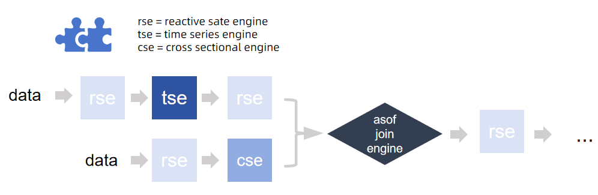根据各自适用的逻辑和场景，DolphinDB 内置的流计算引擎可以分为以下几类：
表 7-3-1 不同流计算场景下适用的引擎及其计算逻辑
| 接入数据源 | 场景 | 引擎 | 类比批计算逻辑 |
|---|---|---|---|
| 单流 | 时序窗口聚合计算 | createTimeSeriesEngine | group by + interval/bar/dailyAlignedBar |
| createDailyTimeSeriesEngine | |||
| 涉及历史状态的计算 | createReactiveStateEngine |
状态函数： mfunc, tmfunc, cumfunc, rowfunc, prev/move/deltas… 无状态函数： rowFunc, 四则运算… |
|
| createNarrowReactiveStateEngine | |||
| createDualOwnershipReactiveStateEngine | |||
| createReactiveStatelessEngine | 类似 excel 单元格关联 | ||
| 截面计算 | createCrossSectionalEngine | pivot by | |
| 会话窗口计算 | createSessionWindowEngine | sessionWindow | |
| 异常检测、风控 | createAnomalyDetectionEngine | iif | |
| createRuleEngine | |||
| 基础算子计算，通过GPU 加速 | createDeviceEngine | / | |
| 快照合成 | createOrderBookSnapshotEngine | / | |
| 复杂事件处理引擎 | createCEPEngine | / | |
| 数据分发、广播 | createStreamBroadcastEngine | 同一张流表复制多路广播 | |
| createStreamDispatchEngine | 同一张流表拆分后，分发给多个引擎并行计算 | ||
| 双流 | 等值连接：左右表互相匹配连接列和时间列都相等的数据 | createEquiJoinEngine | equi join (ej) |
| 左连接：按连接列分组，左表就近匹配右表时间列进行连接 | createAsofJoinEngine | asof join (aj) | |
| 左连接：左边按连接列等值匹配右表数据，多条匹配可以选择保留最新还是最就的一条 | createLeftSemiJoinEngine | lsj (多条匹配仅取第一条) | |
| 左连接：按连接列分组，左表时间列确立一个窗口，匹配右表在该窗口中的数据 | createWindowJoinEngine | window join (wj) | |
| 左连接：适用于右表不频繁更新的场景（通常是维度表），左表按连接列等值匹配右表 | createLookupJoinEngine | left join (lj) |
例. 流式计算主买/主卖交易量（示例代码参考：流式计算中证 1000 指数主买/主卖交易量）
计算公式：主买/主卖交易量 = Σ(交易价格*交易量*权重因子)
拆分计算逻辑，得到的计算流程为：
（1）计算每分钟的成交量（按照股票分组）→ 时序聚合引擎
（2）按分钟累计成交量（按照股票分组） → 响应式状态引擎
（3）对股票成交量进行加权求和计算交易量 → 横截面引擎
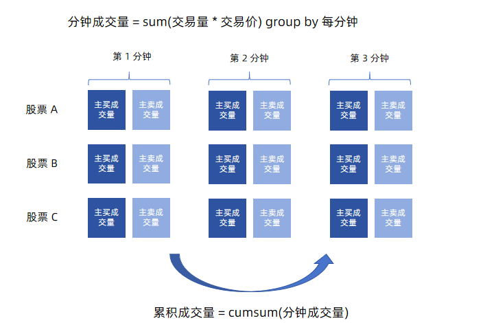 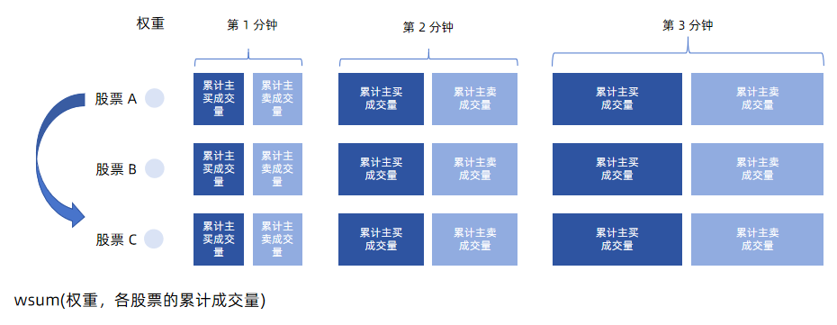在运行脚本前，可以先清理环境中的变量，并初始化定义一些公共变量：
undef all
go
dbName = "dfs://stock_trade"
tbName = "trade"
streamTbName = "trade_st"
try{unsubscribeTable(tableName=streamTbName, actionName="act_tsEngine")}catch(ex){print(ex)}
try{dropStreamEngine("rsEngine")}catch(ex){print(ex)}
try{dropStreamEngine("tsEngine")}catch(ex){print(ex)}
try{dropStreamEngine("csEngine")}catch(ex){print(ex)}定义一个持久化流表 trade_st 用于接收实时的逐笔成交数据。
colName=loadTable(dbName, tbName).schema().colDefs.name
colType=loadTable(dbName, tbName).schema().colDefs.typeString
t = streamTable(100:0, colName, colType);
try{
enableTableShareAndPersistence(table=t, tableName=streamTbName, asynWrite=true, compress=true, cacheSize=100000, retentionMinutes=1440, flushMode=0, preCache=10000)
}
catch(ex){
print(ex)
}
undef("t")
go模拟创建成分股权重因子。
sids = exec distinct SecurityID from loadTable(dbName, tbName)
def createWeightDict(sids){
return dict(sids, take(0.001, sids.size()))
}
weightDict = createWeightDict(sids)模拟创建成分股权重因子。
// 输入表结构定义
tsEngineDummy = table(1:0, `SecurityID`TradeTime`TradePrice`TradeQty`TradeBSFlag, [SYMBOL, TIMESTAMP, DOUBLE, INT, SYMBOL])
rsEngineDummy = table(1:0, `TradeTime`SecurityID`SellTradeAmount`BuyTradeAmount, [TIMESTAMP, SYMBOL, DOUBLE, DOUBLE])
csEngineDummy = table(1:0, `SecurityID`TradeTime`SellTradeAmount`BuyTradeAmount, [SYMBOL, TIMESTAMP, DOUBLE, DOUBLE])
//创建存储结果的表
share(keyedTable(`Time, 2000:0, `Time`SellTradeAmount`BuyTradeAmount`UpdateTime, [TIMESTAMP, DOUBLE, DOUBLE, TIMESTAMP]), "tradeAmountIndex")
go定义流计算引擎。由于引擎是通过输出表设置为下一个引擎，来进行级联的，为保证脚本正常解析，引擎定义的顺序和业务数据流的逻辑是相反的。如本例中计算逻辑是 时序引擎 → 响应式状态引擎 → 横截面引擎，脚本中定义顺序则相反：
//创建横截面引擎
csEngine = createCrossSectionalEngine(name="csEngine", metrics=<[wsum(SellTradeAmount, weightDict[SecurityID]), wsum(BuyTradeAmount, weightDict[SecurityID]), now()]>, dummyTable=csEngineDummy, outputTable=objByName("tradeAmountIndex"), keyColumn=`SecurityID, triggeringPattern="keyCount", triggeringInterval=1000, useSystemTime=false, timeColumn=`TradeTime, lastBatchOnly=false)
//创建响应式状态引擎
rsEngine = createReactiveStateEngine(name="rsEngine", metrics=<[cummax(TradeTime), cumsum(SellTradeAmount), cumsum(BuyTradeAmount)]>, dummyTable=rsEngineDummy, outputTable=csEngine, keyColumn=`SecurityID)
//创建时间序列引擎
tsEngine = createTimeSeriesEngine(name="tsEngine", windowSize=60000, step=60000, metrics=<[sum(iif(TradeBSFlag=="S", 1, 0)*TradeQty*TradePrice), sum(iif(TradeBSFlag=="B", 1, 0)*TradeQty*TradePrice)]>, dummyTable=tsEngineDummy, outputTable=rsEngine, timeColumn=`TradeTime, keyColumn=`SecurityID, useWindowStartTime=true, fill=[0, 0], forceTriggerTime=100)订阅逐笔数据表，写入引擎流水线的第一个引擎：时序聚合引擎。
本例自定义了一个流数据处理函数 streamHandler，可以通过修改内部逻辑自定义数据处理方案。
// handler 数据处理函数
def streamHandler(mutable engine, msg){
data = select SecurityID, concatDateTime(TradeDate, TradeTime) as TradeTime, TradePrice, TradeQty, TradeBSFlag from msg
engine.append!(data)
}
// 订阅流数据表
subscribeTable(tableName=streamTbName, actionName="act_tsEngine", offset=0, handler=streamHandler{tsEngine}, msgAsTable=true, batchSize=10000, throttle=0.001)通过 replayDS 函数获取历史数据源，然后借助 replay
函数模拟流数据回放过程。
// 后台提交数据回放任务，模拟实时数据注入
// 本例设置 timeRepartitionSchema 将数据源按照 15min 进行切片，这是为了保证回放时数据不会 OOM
ds = replayDS(<select * from loadTable(dbName, tbName)>, dateColumn="TradeDate", timeColumn="TradeTime", timeRepartitionSchema=09:30:00.000 + 15*1000*60*(0..22))
submitJob("relay", "replay to trade", replay{inputTables=ds, outputTables=streamTbName, dateColumn="TradeDate", timeColumn="TradeTime", replayRate=10000000, absoluteRate=true})
getRecentJobs(1)回放进程可以通过函数 getRecentJobs 进程查询。
通过 SQL 查询输出的结果表：
select * from tradeAmountIndex limit 10为了新用户能够更好理解引擎的计算，我们仔细观察三个计算引擎的流计算指标。
- 时序聚合引擎
<[sum(iif(TradeBSFlag=="S", 1, 0)*TradeQty*TradePrice), sum(iif(TradeBSFlag=="B", 1, 0)*TradeQty*TradePrice)]>
- 响应式状态引擎
<[cummax(TradeTime), cumsum(SellTradeAmount), cumsum(BuyTradeAmount)]>- 横截面引擎
<[wsum(SellTradeAmount, weightDict[SecurityID]), wsum(BuyTradeAmount, weightDict[SecurityID]), now()]>将上述流计算脚本转换为 SQL 批计算逻辑，可改写如下：
从分布式表中筛选一部分字段进行计算：
data = select SecurityID, concatDateTime(TradeDate, TradeTime) as TradeTime, TradePrice, TradeQty, TradeBSFlag from loadTable(dbName, tbName)- 按时间进行分钟聚合（时序聚合）
t1 = select sum(iif(TradeBSFlag=="S", 1, 0)*TradeQty*TradePrice) as SellTradeAmount,
sum(iif(TradeBSFlag=="B", 1, 0)*TradeQty*TradePrice) as BuyTradeAmount
from data group by SecurityID, interval(TradeTime, 1m, 0) as TradeTime- 累积计算成交量（状态计算）
t2 = select SecurityID, cummax(TradeTime) as Time,
cumsum(SellTradeAmount) as SellTradeAmount,
cumsum(BuyTradeAmount) as BuyTradeAmount
from t1 context by SecurityID- 按股票因子加权计算成交量（截面计算）
t3 = select wsum(SellTradeAmount, weightDict[SecurityID]) as SellTradeAmount,
wsum(BuyTradeAmount, weightDict[SecurityID]) as BuyTradeAmount
from t2 group by Time对比批计算和流计算的脚本，可以发现不论是引擎的算子还是 SQL select 的计算主体，本质上都使用了一套函数去实现，这体现了 DolphinDB 流批一体的计算特点。
7.4 常见问题
- 流表数据是否支持部分记录的更新和删除？
不支持。流表记录只能追加，一旦追加后就不能更新和删除。
特殊地，对于键值流表（keyedStreamTable 和 latestKeyedStreamTable），系统支持在数据写入流表前，进行键值检查，以选择数据是追加还是丢弃。
- 流表数据量大，内存占用不够怎么解决?
可以将流表通过
enableTablePersistence函数或者enableTableShareAndPersistence函数进行持久化，系统会将一部分数据持久化存储到磁盘指定目录（通过配置参数 persistenceDir 设置）。 -
如何配置重启后自动加载订阅流表?
将流数据表定义和流表订阅操作放在启动脚本 startup.dos （通过配置参数 startup 设置）内，这样节点重启后可以自动加载订阅流表。详情参考教程 启动脚本 和 节点启动时的流计算自动订阅。
-
流表如何进行删除？一直无法删除如何解决？
流表需要通过函数
dropStreamTable进行删除，而不是通过undef(`st, SHARED)进行删除。如果流表一直无法删除，请通过
getStreamingStat函数查看当前流表上是否存在未取消的订阅，只有订阅全被取消后（取消订阅函数unsubscribeTable），才能删除流表。 -
如何配置定期删除持久化流表持久化的数据？
用户可以在通过
enableTablePersistence函数或者enableTableShareAndPersistence函数持久化流表时，设置 retentionMinutes 参数，定期删除持久化的数据。 -
如何查询当前流表是否存在？
可以通过函数 existsStreamTable 查看指定流数据表是否存在。
需要注意，用户常会误用 defined 函数进行判断，但是该函数对于共享内存表也会返回 true。
-
流订阅或流计算异常如何排查？
函数
getStreamingStat返回了流订阅发布的详细信息，其中比较常用的信息有：- 通过 subWorkers 表的 lastErrMsg 字段可以排查订阅中是否存在异常；
- 通过 pubConns 表和 subWorkers 表中的 queueDepth 字段可以排查订阅是否阻塞；
通过函数 getStreamEngineStat 排查流计算引擎的状态。
7.5 下一步阅读
官方文档 流数据 整理了一些流计算相关的文档和教程说明，此处仅列举部分：
- 流数据架构：流数据功能简介 流数据表 发布与订阅
- 流计算引擎：内置流式计算引擎 内置多数据源流式关联引擎
- 流数据接入：Python API 接入数据 行情数据插件：NSQ
- 数据回放：股票行情回放
- 流批一体：流批一体 快速搭建 Level-2 快照数据流批一体因子计算平台最佳实践
- 场景案例：金融实时实际波动率预测 实时计算日累计逐单资金流 实时计算分钟资金流 实时选取外汇行情多价源最优价 金融因子流式实现
- 可视化展示：数据面板 Altair 连接 DolphinDB 数据源 DolphinDB Grafana DataSource Plugin
8. 附录
各章节对应的脚本代码如下：